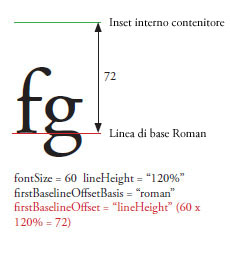
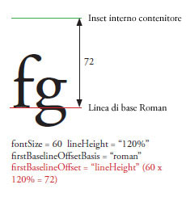

| Pacchetto | fl.text |
| Classe | public class TLFTextField |
| Ereditarietà | TLFTextField |
| Versione linguaggio: | ActionScript 3.0 |
| Versione prodotto: | Flash CS5 |
| Versioni runtime: | Flash Player 10, AIR 1.5 |
Potete creare un oggetto TLFTextField nello stesso modo con cui create un campo di testo con la classe TextField. Utilizzate quindi la proprietà textFlow per assegnare le opzioni di formattazione avanzate delle classi TLF. Ad esempio:
import fl.text.TLFTextField; import flashx.textLayout.formats.TextLayoutFormat; import flashx.textLayout.elements.TextFlow; var myTLFTextField:TLFTextField = new TLFTextField(); addChild(myTLFTextField); myTLFTextField.x = 10; myTLFTextField.y = 10; myTLFTextField.width = 200 myTLFTextField.height = 100; myTLFTextField.text = "This is my text"; var myFormat:TextLayoutFormat = new TextLayoutFormat(); myFormat.textIndent = 8; myFormat.color = 0x336633; myFormat.fontFamily = "Arial, Helvetica, _sans"; myFormat.fontSize = 24; var myTextFlow:TextFlow = myTLFTextField.textFlow; myTextFlow.hostFormat = myFormat; myTextFlow.flowComposer.updateAllControllers();
Altri esempi
Formattazione di testo con TLF
Importazione ed esportazione di testo con TLF
Gestione di contenitori di testo con TLF
Abilitazione di selezione, modifica e annullamento del testo con TLF
Gestione degli eventi con TLF
Altre informazioni
Elementi API correlati
 Nascondi proprietà pubbliche ereditate
Nascondi proprietà pubbliche ereditate Mostra proprietà pubbliche ereditate
Mostra proprietà pubbliche ereditate| Proprietà | Definito da | ||
|---|---|---|---|
 | accessibilityImplementation : AccessibilityImplementation
L'implementazione di accessibilità corrente (AccessibilityImplementation) di questa istanza InteractiveObject. | InteractiveObject | |
| accessibilityProperties : AccessibilityProperties
Le opzioni di accessibilità correnti di questo oggetto di visualizzazione. | DisplayObject | |
| alpha : Number
Indica il valore della trasparenza alfa dell'oggetto specificato. | DisplayObject | |
| alwaysShowSelection : Boolean
Quando è impostata su true e il campo di testo non è attivo, Flash Player evidenzia la selezione nel campo di testo in azzurro. | TLFTextField | ||
| antiAliasType : String
Il tipo di antialiasing utilizzato per questo campo di testo. | TLFTextField | ||
| autoSize : String
Controlla il dimensionamento e l'allineamento automatici dei campi di testo. | TLFTextField | ||
| background : Boolean
Specifica se il campo di testo ha un riempimento di sfondo. | TLFTextField | ||
| backgroundAlpha : Number
Specifica il valore alfa dello sfondo del campo di testo. | TLFTextField | ||
| backgroundColor : uint
Specifica il colore di sfondo del campo di testo. | TLFTextField | ||
| blendMode : String
Un valore della classe BlendMode che specifica il metodo di fusione da utilizzare. | DisplayObject | |
| blendShader : Shader [sola scrittura]
Imposta uno shader utilizzato per la fusione dei colori di primo piano e sfondo. | DisplayObject | |
| blockProgression : Object
Specifica un avanzamento orizzontale o verticale del posizionamento delle righe. | TLFTextField | ||
| border : Boolean
Specifica se il campo di testo ha un bordo. | TLFTextField | ||
| borderAlpha : Number
Specifica il valore alfa del bordo. | TLFTextField | ||
| borderColor : uint
Specifica il colore del bordo del campo di testo. | TLFTextField | ||
| borderWidth : Number
Specifica la larghezza del bordo. | TLFTextField | ||
| bottomScrollV : int [sola lettura]
Un numero intero (indice a base uno) che indica l'ultima riga in basso attualmente visibile nel campo di testo specificato. | TLFTextField | ||
| buttonMode : Boolean
Specifica la modalità pulsante di questo sprite. | Sprite | |
| cacheAsBitmap : Boolean
Se è impostata su true, nella cache dei runtime Flash viene memorizzata una rappresentazione bitmap interna dell'oggetto di visualizzazione. | DisplayObject | |
| cacheAsBitmapMatrix : Matrix
Se il valore è diverso da null, questo oggetto Matrix definisce il modo in cui viene eseguito il rendering di un oggetto di visualizzazione quando cacheAsBitmap è impostato su true. | DisplayObject | |
| caretIndex : int [sola lettura]
L'indice della posizione del punto di registrazione (accento circonflesso). | TLFTextField | ||
| columnCount : Object
Numero di colonne di testo (utilizza il valore predefinito se è undefined durante la cascata). | TLFTextField | ||
| columnGap : Object
Specifica la quantità di spazio per il margine, espressa in pixel, da lasciare tra le colonne (utilizza il valore predefinito se è undefined durante la cascata). | TLFTextField | ||
| columnWidth : Object
La larghezza della colonna è espressa in pixel (utilizza il valore predefinito se è undefined durante la cascata). | TLFTextField | ||
| condenseWhite : Boolean
Un valore booleano che specifica se viene rimosso lo spazio vuoto supplementare (spazi, interruzioni di riga, ecc.) in un campo di testo con testo HTML o codice TLF. | TLFTextField | ||
| constructor : Object
Un riferimento all'oggetto classe o alla funzione di costruzione per una determinata istanza di oggetto. | Object | |
| contextMenu : NativeMenu
Specifica il menu di scelta rapida associato all'oggetto. | InteractiveObject | |
| defaultTextFormat : flash.text:TextFormat
Specifica il formato applicato al testo appena immesso, ad esempio al testo digitato da un utente o quello immesso mediante il metodo replaceSelectedText(). | TLFTextField | ||
| direction : String
Specifica il livello di incorporamento bidirezionale predefinito del testo nel blocco di testo. | TLFTextField | ||
| displayAsPassword : Boolean
Specifica se il campo di testo è protetto da password. | TLFTextField | ||
| doubleClickEnabled : Boolean
Specifica se l'oggetto riceve gli eventi doubleClick. | InteractiveObject | |
| dropTarget : DisplayObject [sola lettura]
Specifica l'oggetto di visualizzazione sopra il quale viene trascinato lo sprite o sul quale viene rilasciato. | Sprite | |
| embedFonts : Boolean
Specifica se deve essere eseguito il rendering del campo di testo mediante i profili di carattere incorporati. | TLFTextField | ||
| filters : Array
Un array indicizzato che contiene ogni oggetto filtro attualmente associato all'oggetto di visualizzazione. | DisplayObject | |
| firstBaselineOffset : Object
Specifica la posizione della linea di base della prima riga nel contenitore. | TLFTextField | ||
| focusRect : Object
Specifica se l'oggetto visualizza un rettangolo di attivazione. | InteractiveObject | |
| graphics : Graphics [sola lettura]
Specifica l'oggetto Graphics che appartiene a questo oggetto Sprite, in cui possono essere eseguiti i comandi di disegno vettoriale. | Sprite | |
| gridFitType : String
Il tipo di adattamento alla griglia utilizzato per questo campo di testo. | TLFTextField | ||
| height : Number
Indica l'altezza dell'oggetto di visualizzazione espressa in pixel. | DisplayObject | |
| hitArea : Sprite
Definisce un altro sprite come area attiva di uno sprite. | Sprite | |
| htmlText : String
Contiene la rappresentazione HTML dei contenuti dei campi di testo. | TLFTextField | ||
| length : int [sola lettura]
Il numero di caratteri presenti in un campo di testo. | TLFTextField | ||
| loaderInfo : LoaderInfo [sola lettura]
Restituisce un oggetto LoaderInfo contenente informazioni sul caricamento del file al quale questo oggetto di visualizzazione appartiene. | DisplayObject | |
| mask : DisplayObject
L'oggetto di visualizzazione chiamante viene mascherato dall'oggetto mask specificato. | DisplayObject | |
| maxChars : int
Il numero massimo di caratteri immessi da un utente, che il campo di testo può contenere. | TLFTextField | ||
| maxScrollH : int [sola lettura]
Il valore massimo di scrollH. | TLFTextField | ||
| maxScrollV : int [sola lettura]
Il valore massimo di scrollV. | TLFTextField | ||
| metaData : Object
Ottiene l’oggetto di metadati dell’istanza DisplayObject se i metadati sono stati memorizzati insieme all’istanza di questo DisplayObject nel file SWF mediante un tag PlaceObject4. | DisplayObject | |
| mouseChildren : Boolean
Determina se gli elementi secondari dell'oggetto sono abilitati o meno per il mouse o per il dispositivo di input dell'utente. | DisplayObjectContainer | |
| mouseEnabled : Boolean
Specifica se questo oggetto riceve messaggi del mouse o di altri dispositivi di input dell'utente. | InteractiveObject | |
| mouseWheelEnabled : Boolean
Un valore booleano che indica se Flash Player scorre automaticamente i campi di testo multiriga quando l'utente fa clic su un campo di testo e utilizza la rotella del mouse. | TLFTextField | ||
| mouseX : Number [sola lettura]
Indica la coordinata x del mouse o la posizione del dispositivo di input dell'utente, espressa in pixel. | DisplayObject | |
| mouseY : Number [sola lettura]
Indica la coordinata y del mouse o la posizione del dispositivo di input dell'utente, espressa in pixel. | DisplayObject | |
| multiline : Boolean
Indica se il campo di testo è multiriga. | TLFTextField | ||
| name : String
Indica il nome dell'istanza dell'oggetto DisplayObject. | DisplayObject | |
| needsSoftKeyboard : Boolean
Specifica se deve essere visualizzata una tastiera virtuale (una tastiera software a video) quando questa istanza InteractiveObject riceve lo stato di attivazione. | InteractiveObject | |
| numChildren : int [sola lettura]
Restituisce il numero di elementi secondari di questo oggetto. | DisplayObjectContainer | |
| numLines : int [sola lettura]
Definisce il numero delle righe di testo in un campo di testo multiriga. | TLFTextField | ||
| opaqueBackground : Object
Specifica se l'oggetto di visualizzazione è opaco con un determinato colore di sfondo. | DisplayObject | |
| paddingBottom : Object
Il margine interno inferiore espresso in pixel (utilizza il valore predefinito se è undefined durante la cascata). | TLFTextField | ||
| paddingLeft : Object
Il margine interno sinistro espresso in pixel (utilizza il valore predefinito se è undefined durante la cascata). | TLFTextField | ||
| paddingRight : Object
Il margine interno destro espresso in pixel (utilizza il valore predefinito se è undefined durante la cascata). | TLFTextField | ||
| paddingTop : Object
Il margine interno superiore espresso in pixel (utilizza il valore predefinito se è undefined durante la cascata). | TLFTextField | ||
| parent : DisplayObjectContainer [sola lettura]
Indica l'oggetto DisplayObjectContainer che contiene questo oggetto di visualizzazione. | DisplayObject | |
| pixelMaxScrollV : int [sola lettura]
Il valore massimo di pixelScrollV. | TLFTextField | ||
| pixelScrollV : int
La posizione verticale del testo in un campo di testo, in pixel, a differenza di scrollV che si misura in righe. | TLFTextField | ||
| restrict : String
Indica il set di caratteri che l'utente può immettere in un campo di testo. | TLFTextField | ||
| root : DisplayObject [sola lettura]
Nel caso di un oggetto di visualizzazione all'interno di un file SWF caricato, la proprietà principale è l'oggetto di visualizzazione più in alto nella porzione della struttura dell'elenco di visualizzazione rappresentata da quel file SWF. | DisplayObject | |
| rotation : Number
Indica la rotazione dell'istanza DisplayObject, espressa in gradi, rispetto alla posizione originale. | DisplayObject | |
| rotationX : Number
Indica la rotazione dell'asse x dell'istanza DisplayObject, espressa in gradi, rispetto all'orientamento originale relativo al contenitore principale 3D. | DisplayObject | |
| rotationY : Number
Indica la rotazione dell'asse y dell'istanza DisplayObject, espressa in gradi, rispetto all'orientamento originale relativo al contenitore principale 3D. | DisplayObject | |
| rotationZ : Number
Indica la rotazione dell'asse z dell'istanza DisplayObject, espressa in gradi, rispetto all'orientamento originale relativo al contenitore principale 3D. | DisplayObject | |
| scale9Grid : Rectangle
La griglia di modifica in scala attualmente attiva. | DisplayObject | |
| scaleX : Number
Indica la scala orizzontale (percentuale) dell'oggetto applicata dal punto di registrazione. | DisplayObject | |
| scaleY : Number
Indica la scala verticale (percentuale) di un oggetto applicata dal punto di registrazione dell'oggetto. | DisplayObject | |
| scaleZ : Number
Indica la scala di profondità (percentuale) di un oggetto applicata dal punto di registrazione dell'oggetto. | DisplayObject | |
| scrollH : int
La posizione di scorrimento orizzontale corrente. | TLFTextField | ||
| scrollRect : Rectangle
I limiti del rettangolo di scorrimento dell'oggetto di visualizzazione. | DisplayObject | |
| scrollV : int
La posizione verticale del testo in un campo. | TLFTextField | ||
| selectable : Boolean
Un valore booleano che indica se il campo di testo è selezionabile. | TLFTextField | ||
| selectionBeginIndex : int [sola lettura]
Il valore dell'indice a base zero del primo carattere nella selezione corrente. | TLFTextField | ||
| selectionEndIndex : int [sola lettura]
Il valore dell'indice a base zero dell'ultimo carattere nella selezione corrente. | TLFTextField | ||
| sharpness : Number
La precisione non è applicabile ai campi di testo TLF TextField. | TLFTextField | ||
| softKeyboard : String
Controlla l'aspetto della tastiera software. | InteractiveObject | |
| softKeyboardInputAreaOfInterest : Rectangle
Definisce l’area che deve rimanere visibile sullo schermo quando è visualizzata una tastiera virtuale (non disponibile in iOS). | InteractiveObject | |
| soundTransform : flash.media:SoundTransform
Controlla il suono nello sprite. | Sprite | |
| stage : Stage [sola lettura]
Lo stage dell'oggetto di visualizzazione. | DisplayObject | |
| styleSheet : StyleSheet
Fogli di stile per il TextField TLF. | TLFTextField | ||
| tabChildren : Boolean
Determina se gli elementi secondari dell'oggetto sono abilitati per la tabulazione. | DisplayObjectContainer | |
| tabEnabled : Boolean
Specifica se questo oggetto è incluso nell'ordine di tabulazione. | InteractiveObject | |
| tabIndex : int
Specifica l'ordine di tabulazione degli oggetti in un file SWF. | InteractiveObject | |
| text : String
Una stringa che rappresenta il testo corrente nel campo di testo. | TLFTextField | ||
| textColor : uint
Il colore del testo nel campo di testo, in formato esadecimale. | TLFTextField | ||
| textFlow : flashx.textLayout.elements:TextFlow
Utilizzate questa proprietà per assegnare la formattazione dalle classi TLF incluse nei pacchetti flashx all'istanza TLFTextField. | TLFTextField | ||
| textHeight : Number [sola lettura]
L'altezza del testo espressa in pixel. | TLFTextField | ||
| textSnapshot : flash.text:TextSnapshot [sola lettura]
Restituisce un oggetto TextSnapshot per questa istanza DisplayObjectContainer. | DisplayObjectContainer | |
| textWidth : Number [sola lettura]
La larghezza del testo espressa in pixel. | TLFTextField | ||
| thickness : Number
La proprietà thickness non è applicabile a TextField TLF. | TLFTextField | ||
| tlfMarkup : String
Imposta o ottiene il codice TLF del testo nel campo di testo TLF. | TLFTextField | ||
| transform : flash.geom:Transform
Un oggetto con proprietà relative alla matrice, alla trasformazione del colore e ai limiti di pixel di un oggetto di visualizzazione. | DisplayObject | |
| type : String
Il tipo di campo di testo. | TLFTextField | ||
| useHandCursor : Boolean
Un valore booleano che indica se viene visualizzato un cursore a forma di mano quando il puntatore passa sopra uno sprite in cui la proprietà buttonMode è impostata su true. | Sprite | |
| useRichTextClipboard : Boolean
Specifica se copiare la formattazione del testo negli Appunti assieme al testo. | TLFTextField | ||
| verticalAlign : String
Allineamento verticale o giustificazione (utilizza il valore predefinito se è undefined durante la cascata). | TLFTextField | ||
| visible : Boolean
Determina se l'oggetto di visualizzazione è visibile o meno. | DisplayObject | |
| width : Number
Indica la larghezza dell'oggetto di visualizzazione espressa in pixel. | DisplayObject | |
| wordWrap : Boolean
Un valore booleano che indica se per il campo di testo è abilitato il ritorno a capo automatico. | TLFTextField | ||
| x : Number
Indica la coordinata x dell'istanza DisplayObject relativa alle coordinate locali del DisplayObjectContainer principale. | DisplayObject | |
| y : Number
Indica la coordinata y dell'istanza DisplayObject relativa alle coordinate locali del DisplayObjectContainer principale. | DisplayObject | |
| z : Number
Indica la posizione della coordinata z lungo l'asse z dell'istanza DisplayObject relativa al contenitore principale 3D. | DisplayObject | |
| Metodo | Definito da | ||
|---|---|---|---|
Funzione di costruzione per gli oggetti TLFTextField. | TLFTextField | ||
|
Aggiunge un'istanza secondaria DisplayObject a questa istanza DisplayObjectContainer. | DisplayObjectContainer | |
|
Aggiunge un'istanza secondaria DisplayObject a questa istanza DisplayObjectContainer. | DisplayObjectContainer | |
| addEventListener(type:String, listener:Function, useCapture:Boolean = false, priority:int = 0, useWeakReference:Boolean = false):void
Registra un oggetto listener di eventi con un oggetto EventDispatcher, in modo che il listener riceva la notifica di un evento. | EventDispatcher | |
Aggiunge la stringa specificata dal parametro nuovoTesto alla fine del testo del relativo campo. | TLFTextField | ||
|
Indica se le restrizioni di sicurezza possono determinare l'omissione di eventuali oggetti di visualizzazione dall'elenco restituito dalla chiamata al metodo DisplayObjectContainer.getObjectsUnderPoint() con il punto specificato. | DisplayObjectContainer | |
|
Determina se l'oggetto di visualizzazione specificato è un elemento secondario dell'istanza DisplayObjectContainer oppure è l'istanza stessa. | DisplayObjectContainer | |
|
Invia un evento nel flusso di eventi. | EventDispatcher | |
|
Restituisce un rettangolo che definisce l'area dell'oggetto di visualizzazione relativa al sistema di coordinate dell'oggetto targetCoordinateSpace. | DisplayObject | |
Restituisce un rettangolo che rappresenta il riquadro di delimitazione del carattere. | TLFTextField | ||
Restituisce il valore dell'indice a base zero del carattere nel punto specificato dai parametri x e y. | TLFTextField | ||
|
Restituisce l'istanza dell'oggetto di visualizzazione secondario che si trova in corrispondenza della posizione di indice specificata. | DisplayObjectContainer | |
|
Restituisce l'oggetto di visualizzazione secondario al quale corrisponde il nome specificato. | DisplayObjectContainer | |
|
Restituisce la posizione di indice di un'istanza DisplayObject secondaria. | DisplayObjectContainer | |
Dato un indice di carattere, restituisce l'indice del primo carattere nello stesso paragrafo. | TLFTextField | ||
Restituisce un riferimento DisplayObject per l'id dato, relativo a un'immagine o a un file SWF che è stato aggiunto a un campo di testo con formattazione HTML mediante un tag <img>. | TLFTextField | ||
Restituisce il valore dell'indice a base zero della riga nel punto specificato dai parametri x e y. | TLFTextField | ||
Restituisce il valore dell'indice a base zero della riga contenente il carattere specificato dal parametro charIndex. | TLFTextField | ||
Restituisce il numero di caratteri presenti in una riga di testo specifica. | TLFTextField | ||
Restituisce informazioni sulla metrica relative a una data riga di testo. | TLFTextField | ||
Restituisce l'indice di carattere del primo carattere nella riga specificata dal parametro lineIndex. | TLFTextField | ||
Restituisce il testo della riga specificata dal parametro lineIndex. | TLFTextField | ||
|
Restituisce un array di oggetti che si trovano sotto il punto specificato e sono elementi secondari (di uno o più livelli inferiori) di questa istanza DisplayObjectContainer. | DisplayObjectContainer | |
Dato un indice di carattere, restituisce la lunghezza del paragrafo contenente il carattere dato. | TLFTextField | ||
|
Restituisce un rettangolo che definisce i bordi dell'oggetto di visualizzazione in base al sistema di coordinate definito dal parametro targetCoordinateSpace, esclusi gli eventuali tratti presenti sulle forme. | DisplayObject | |
Restituisce un oggetto TextFormat che contiene le informazioni di formattazione per tutto il testo compreso tra i parametri indiceIniziale e indiceFinale. | TLFTextField | ||
|
Converte le coordinate dello stage (globali) in quelle (locali) dell'oggetto di visualizzazione per l'oggetto Point. | DisplayObject | |
|
Converte un punto bidimensionale dalle coordinate dello stage (globali) in quelle (locali) di un oggetto di visualizzazione tridimensionale. | DisplayObject | |
|
Verifica se per l'oggetto EventDispatcher sono presenti listener registrati per un tipo specifico di evento. | EventDispatcher | |
|
Indica se per un oggetto è definita una proprietà specifica. | Object | |
|
Valuta il riquadro di delimitazione dell'oggetto di visualizzazione per verificare se si sovrappone o si interseca con il riquadro di delimitazione dell'oggetto di visualizzazione obj. | DisplayObject | |
|
Valuta l'oggetto di visualizzazione per stabilire se si sovrappone o si interseca con il punto specificato dai parametri x e y. | DisplayObject | |
Restituisce true se è disponibile un carattere incorporato con i valori fontName e fontStyle specificati, dove Font.fontType è flash.text.FontType.EMBEDDED_CFF. | TLFTextField | ||
|
Indica se un'istanza della classe Object si trova nella catena di prototipi dell'oggetto specificato come parametro. | Object | |
|
Converte un punto tridimensionale delle coordinate (locali) dell'oggetto di visualizzazione tridimensionale in un punto bidimensionale nelle coordinate dello stage (globali). | DisplayObject | |
|
Converte le coordinate dell'oggetto di visualizzazione (locali) in quelle dello stage (globali) per l'oggetto Point. | DisplayObject | |
|
Indica se la proprietà specificata esiste ed è enumerabile. | Object | |
|
Rimuove l'istanza DisplayObject secondaria specificata dall'elenco degli elementi secondari dell'istanza DisplayObjectContainer. | DisplayObjectContainer | |
|
Rimuove un'istanza DisplayObject secondaria dalla posizione di indice specificata nell'elenco degli elementi secondari di DisplayObjectContainer. | DisplayObjectContainer | |
|
Rimuove tutte le istanze DisplayObject secondarie dall'elenco degli elementi secondari dell'istanza DisplayObjectContainer. | DisplayObjectContainer | |
|
Rimuove un listener dall'oggetto EventDispatcher. | EventDispatcher | |
Sostituisce la selezione corrente con il contenuto del parametro value. | TLFTextField | ||
Sostituisce un intervallo di caratteri, specificato dai parametri indiceIniziale e indiceFinale, con il contenuto del parametro nuovoTesto. | TLFTextField | ||
|
Alza una tastiera virtuale. | InteractiveObject | |
|
Cambia la posizione di un elemento secondario nel contenitore di oggetto di visualizzazione. | DisplayObjectContainer | |
|
Imposta la disponibilità di una proprietà dinamica per le operazioni cicliche. | Object | |
Imposta come selezionato il testo designato dai valori di indice del primo e ultimo carattere, specificati dai parametri indiceIniziale e indiceFinale. | TLFTextField | ||
Applica la formattazione indicata dal parametro format al testo specificato nel campo di testo. | TLFTextField | ||
|
Consente all'utente di trascinare lo sprite specificato. | Sprite | |
|
Consente all'utente di trascinare lo sprite specificato su un dispositivo abilitato per il tocco. | Sprite | |
|
Interrompe in modo ricorsivo l’esecuzione della linea temporale di qualsiasi MovieClips che ha origine in questo oggetto. | DisplayObjectContainer | |
|
Termina il metodo startDrag(). | Sprite | |
|
Termina il metodo startTouchDrag(), utilizzato con i dispositivi abilitati per il tocco. | Sprite | |
|
Scambia lo z-order (ordine di profondità) degli oggetti secondari specificati. | DisplayObjectContainer | |
|
Scambia lo z-order (ordine di profondità) degli oggetti secondari nelle due posizioni di indice specificate nell'elenco degli elementi secondari. | DisplayObjectContainer | |
|
Restituisce la rappresentazione in formato stringa di questo oggetto, formattato in base alle convenzioni specifiche per le versioni localizzate. | Object | |
|
Restituisce la rappresentazione in formato stringa dell'oggetto specificato. | Object | |
|
Restituisce il valore di base dell'oggetto specificato. | Object | |
|
Verifica se un listener di eventi è registrato con questo oggetto EventDispatcher o qualsiasi suo antenato per il tipo di evento specificato. | EventDispatcher | |
| Evento | Riepilogo | Definito da | ||
|---|---|---|---|---|
| [evento di trasmissione] Inviato quando Flash Player o l'applicazione AIR ottiene lo stato di attivazione del sistema operativo ed entra nello stato attivo. | EventDispatcher | ||
| Inviato quando un oggetto di visualizzazione viene aggiunto all'elenco di visualizzazione. | DisplayObject | ||
| Inviato quando un oggetto di visualizzazione viene aggiunto all'elenco di visualizzazione sullo stage, sia direttamente o mediante l'aggiunta di una sottostruttura ad albero che contiene l'oggetto di visualizzazione. | DisplayObject | ||
| Inviato dopo la modifica del valore di un controllo, a differenza dell'evento textInput che viene inviato prima della modifica del valore. | TLFTextField | |||
| Inviato quando l'utente sceglie "Cancella" (o "Elimina") dal menu di scelta rapida per il testo. | InteractiveObject | ||
| Inviato quando l'utente preme e rilascia il pulsante principale del dispositivo di puntamento sopra lo stesso InteractiveObject. | InteractiveObject | ||
| Inviato quando un'azione dell'utente causa la visualizzazione del menu di scelta rapida associato a questo oggetto interattivo in un'applicazione AIR. | InteractiveObject | ||
| Inviato quando l'utente attiva la combinazione di tasti di scelta rapida specifici della piattaforma per un'operazione che consente di tagliare oppure sceglie "Taglia" dal menu di scelta rapida per il testo. | InteractiveObject | ||
| Inviato quando l'utente attiva la combinazione di tasti di scelta rapida specifici della piattaforma per un'operazione che consente di tagliare oppure sceglie "Taglia" dal menu di scelta rapida testuale. | InteractiveObject | ||
| [evento di trasmissione] Inviato quando Flash Player o l'applicazione AIR perde l'attivazione del sistema operativo e sta entrando nello stato inattivo. | EventDispatcher | ||
| Inviato quando l'utente preme e rilascia il pulsante principale di un dispositivo di puntamento due volte in rapida successione sopra la stessa istanza InteractiveObject quando il flag doubleClickEnabled dell'oggetto è impostato su true. | InteractiveObject | ||
| [evento di trasmissione] Inviato quando l'indicatore di riproduzione sta entrando in un nuovo fotogramma. | DisplayObject | ||
| [evento di trasmissione] Inviato quando l'indicatore di riproduzione sta per uscire dal fotogramma corrente. | DisplayObject | ||
| Inviato dopo che un oggetto di visualizzazione ha ricevuto lo stato di attivazione. | InteractiveObject | ||
| Inviato dopo che un oggetto di visualizzazione ha perso lo stato di attivazione. | InteractiveObject | ||
| [evento di trasmissione] Inviato dopo l'esecuzione delle funzioni di costruzione degli oggetti di visualizzazione dei fotogrammi, ma prima dell'esecuzione degli script di fotogramma. | DisplayObject | ||
| Inviato quanto l’utente crea un punto di contatto lungo il bordo della superficie di contatto con un’istanza di InteractiveObject (ad esempio toccando bordo della superficie di contatto in Siri Remote per Apple TV). Alcuni dispositivi possono inoltre interpretare questo contatto come una combinazione di più eventi touch. | InteractiveObject | ||
| Inviato quanto l'utente preme due punti di contatto sulla stessa istanza InteractiveObject su un dispositivo abilitato per il tocco (ad esempio, preme e rilascia due dita su un oggetto di visualizzazione disponibile su un cellulare o su un Tablet PC con touch screen). | InteractiveObject | ||
| Inviato quanto l'utente sposta un punto di contatto sull'istanza InteractiveObject su un dispositivo abilitato per il tocco (ad esempio, sposta un dito da sinistra a destra su un oggetto di visualizzazione disponibile su un cellulare o su un Tablet PC con touch screen). | InteractiveObject | ||
| Inviato quanto l'utente esegue un'operazione di rotazione in corrispondenza di un punto di contatto con un'istanza InteractiveObject (ad esempio, tocca lo schermo con due dita e le ruota su un oggetto di visualizzazione disponibile su un cellulare o su un Tablet PC con touch screen). | InteractiveObject | ||
| Inviato quanto l'utente esegue un'operazione di tocco in corrispondenza di un punto di contatto con un'istanza InteractiveObject (ad esempio, tocca lo schermo con tre dita e quindi le sposta parallelamente su un oggetto di visualizzazione disponibile su un cellulare o su un Tablet PC con touch screen). | InteractiveObject | ||
| Inviato quanto l'utente crea un punto di contatto con un'istanza InteractiveObject, quindi tocca un dispositivo abilitato per il tocco (ad esempio, posiziona più dita su un oggetto di visualizzazione per aprire un menu e quindi tocca con un dito per selezionare una voce di menu su un cellulare o su un Tablet PC con touch screen). | InteractiveObject | ||
| Inviato quanto l'utente esegue un'operazione di zoom in corrispondenza di un punto di contatto con un'istanza InteractiveObject (ad esempio, tocca lo schermo con due dita e allontana velocemente le dita su un oggetto di visualizzazione disponibile su un cellulare o su un Tablet PC con touch screen). | InteractiveObject | ||
| Questo evento viene inviato a qualsiasi applicazione client che supporti input in linea con un IME. | InteractiveObject | ||
| Inviato quando l'utente preme un tasto. | InteractiveObject | ||
| Inviato quando l'utente tenta di cambiare l'elemento attivo utilizzando la tastiera. | InteractiveObject | ||
| Inviato quando l'utente rilascia un tasto. | InteractiveObject | ||
| Inviato quando un utente fa clic su un collegamento ipertestuale in un campo di testo abilitato per HTML, dove l'URL inizia con "event:". | TLFTextField | |||
| Inviato quando l'utente preme e rilascia il pulsante centrale del dispositivo di puntamento sopra lo stesso InteractiveObject. | InteractiveObject | ||
| Inviato quando un utente preme il pulsante centrale del dispositivo di puntamento su un'istanza InteractiveObject. | InteractiveObject | ||
| Inviato quando un utente rilascia il pulsante del dispositivo di puntamento su un'istanza InteractiveObject. | InteractiveObject | ||
| Inviato quando un utente preme il pulsante del dispositivo di puntamento su un'istanza InteractiveObject. | InteractiveObject | ||
| Inviato quando l'utente tenta di cambiare l'elemento attivo utilizzando un dispositivo di puntamento. | InteractiveObject | ||
| Inviato quando l'utente sposta il dispositivo di puntamento mentre si trova sopra un'istanza InteractiveObject. | InteractiveObject | ||
| Inviato quando l'utente allontana un dispositivo di puntamento da un'istanza InteractiveObject. | InteractiveObject | ||
| Inviato quando l'utente sposta un dispositivo di puntamento sopra un'istanza InteractiveObject. | InteractiveObject | ||
| Inviato quando un utente rilascia il pulsante del dispositivo di puntamento su un'istanza InteractiveObject. | InteractiveObject | ||
| Inviato quando si fa ruotare la rotella del mouse su un'istanza InteractiveObject. | InteractiveObject | ||
| Inviato dall'iniziatore del trascinamento InteractiveObject quando l'utente rilascia il trascinamento. | InteractiveObject | ||
| Inviato dall'InteractiveObject di destinazione quando un oggetto trascinato viene rilasciato su di esso e il rilascio è stato accettato con una chiamata a DragManager.acceptDragDrop(). | InteractiveObject | ||
| Inviato da un InteractiveObject quando un trascinamento entra nei suoi limiti. | InteractiveObject | ||
| Inviato da un InteractiveObject quando un trascinamento esce dai propri limiti. | InteractiveObject | ||
| Inviato continuamente da un InteractiveObject mentre un'azione di trascinamento rimane all'interno dei suoi limiti. | InteractiveObject | ||
| Inviato all'inizio di un'operazione di trascinamento dall'InteractiveObject che è specificato come iniziatore del trascinamento nella chiamata a DragManager.doDrag(). | InteractiveObject | ||
| Inviato durante un'operazione di trascinamento dall'InteractiveObject che è specificato come iniziatore del trascinamento nella chiamata a DragManager.doDrag(). | InteractiveObject | ||
| Inviato quando l'utente attiva la combinazione di tasti di scelta rapida specifici della piattaforma per un'operazione che consente di incollare oppure sceglie "Incolla" dal menu di scelta rapida testuale. | InteractiveObject | ||
| Inviato quando l'utente abbassa uno stilo attivo oltre la soglia di rilevamento della prossimità dello schermo. | InteractiveObject | ||
| Inviato quando l'utente solleva uno stilo attivo sopra la soglia di rilevamento della prossimità dello schermo. | InteractiveObject | ||
| Inviato quando l'utente sposta uno stilo attivo sullo schermo rimanendo entro la soglia di rilevamento della prossimità. | InteractiveObject | ||
| Inviato quando l'utente allontana uno stilo attivo da questo InteractiveObject rimanendo tuttavia entro la soglia di rilevamento della prossimità dello schermo. | InteractiveObject | ||
| Inviato quando l'utente sposta uno stilo attivo direttamente sopra questo InteractiveObject rimanendo tuttavia entro la soglia di rilevamento della prossimità dello schermo. | InteractiveObject | ||
| Inviato quando l'utente allontana uno stilo attivo da questo InteractiveObject o da qualsiasi suo elemento secondario rimanendo tuttavia entro la soglia di rilevamento della prossimità dello schermo. | InteractiveObject | ||
| Inviato quando l'utente sposta uno stilo attivo sopra questo InteractiveObject dall'esterno della struttura di discendenti dell'oggetto nell'elenco di visualizzazione (rimanendo entro la soglia di rilevamento della prossimità dello schermo). | InteractiveObject | ||
| Inviato quando un utente rilascia il pulsante del dispositivo di puntamento dopo averlo premuto sopra un’istanza InteractiveObject e aver quindi spostato il dispositivo di puntamento fuori dell’istanza stessa. | InteractiveObject | ||
| Inviato quando un oggetto di visualizzazione sta per essere rimosso dall'elenco di visualizzazione. | DisplayObject | ||
| Inviato quando un oggetto di visualizzazione sta per essere rimosso dall'elenco di visualizzazione sullo stage, sia direttamente o mediante la rimozione di una sottostruttura ad albero che contiene l'oggetto di visualizzazione. | DisplayObject | ||
| [evento di trasmissione] Inviato quando stanno per essere eseguiti l'aggiornamento e il rendering dell'elenco di visualizzazione. | DisplayObject | ||
| Inviato quando l'utente preme e rilascia il pulsante destro del dispositivo di puntamento sopra lo stesso InteractiveObject. | InteractiveObject | ||
| Inviato quando un utente preme il pulsante del dispositivo di puntamento su un'istanza InteractiveObject. | InteractiveObject | ||
| Inviato quando un utente rilascia il pulsante del dispositivo di puntamento su un'istanza InteractiveObject. | InteractiveObject | ||
| Inviato quando l'utente allontana un dispositivo di puntamento da un'istanza InteractiveObject. | InteractiveObject | ||
| Inviato quando l'utente sposta un dispositivo di puntamento sopra un'istanza InteractiveObject. | InteractiveObject | ||
| Inviato da un oggetto TextField dopo che l'utente ha eseguito lo scorrimento. | TLFTextField | |||
| Inviato quando l'utente attiva la combinazione di tasti di scelta rapida specifici della piattaforma per un'operazione che consente di selezionare tutto oppure sceglie "Seleziona tutto" dal menu di scelta rapida testuale. | InteractiveObject | ||
| Inviato immediatamente dopo la visualizzazione della tastiera software. | InteractiveObject | ||
| Inviato immediatamente prima della visualizzazione della tastiera software. | InteractiveObject | ||
| Inviato immediatamente dopo la chiusura della tastiera software. | InteractiveObject | ||
| Inviato quando cambia il valore del flag tabChildren dell'oggetto. | InteractiveObject | ||
| Inviato quando cambia il flag tabEnabled dell'oggetto. | InteractiveObject | ||
| Inviato quando cambia il valore della proprietà tabIndex dell'oggetto. | InteractiveObject | ||
| Flash Player invia l'evento textInput quando un utente immette uno o più caratteri di testo. | TLFTextField | |||
| Inviato quanto l'utente stabilisce per la prima volta un contatto con un dispositivo abilitato per il tocco (ad esempio, tocca con un dito un cellulare o un Tablet PC con touch screen). | InteractiveObject | ||
| Inviato quanto l'utente rimuove il contatto con un dispositivo abilitato per il tocco (ad esempio, solleva un dito da un cellulare o un Tablet PC con touch screen). | InteractiveObject | ||
| Inviato quando l'utente tocca il dispositivo, e viene inviato in modo continuativo finché il punto di contatto non viene rimosso. | InteractiveObject | ||
| Inviato quanto l'utente sposta il punto di contatto lontano da un'istanza InteractiveObject su un dispositivo abilitato per il tocco (ad esempio, trascina un dito da un oggetto di visualizzazione a un altro disponibile su un cellulare o su un Tablet PC con touch screen). | InteractiveObject | ||
| Inviato quanto l'utente sposta il punto di contatto su un'istanza InteractiveObject su un dispositivo abilitato per il tocco (ad esempio, trascina un dito da un punto esterno a un oggetto di visualizzazione a un punto su un oggetto di visualizzazione disponibile su un cellulare o su un Tablet PC con touch screen). | InteractiveObject | ||
| Inviato quanto l'utente sposta il punto di contatto lontano da un'istanza InteractiveObject su un dispositivo abilitato per il tocco (ad esempio, trascina un dito da un oggetto di visualizzazione a un punto esterno a un oggetto di visualizzazione disponibile su un cellulare o su un Tablet PC con touch screen). | InteractiveObject | ||
| Inviato quanto l'utente sposta il punto di contatto su un'istanza InteractiveObject su un dispositivo abilitato per il tocco (ad esempio, trascina un dito da un punto esterno a un oggetto di visualizzazione a un punto su un oggetto di visualizzazione disponibile su un cellulare o su un Tablet PC con touch screen). | InteractiveObject | ||
| Inviato quanto l'utente solleva il punto di contatto sulla stessa istanza InteractiveObject in corrispondenza della quale è stato iniziato il contatto su un dispositivo abilitato per il tocco (ad esempio, preme e rilascia un dito da un oggetto di visualizzazione disponibile su un cellulare o su un Tablet PC con touch screen). | InteractiveObject | ||
alwaysShowSelection | proprietà |
alwaysShowSelection:Boolean| Versione linguaggio: | ActionScript 3.0 |
| Versioni runtime: | Flash Player 10, AIR 1.5 |
Quando è impostata su true e il campo di testo non è attivo, Flash Player evidenzia la selezione nel campo di testo in azzurro. Quando è impostata su false e il campo di testo non è attivo, Flash Player non evidenzia la selezione nel campo di testo.
Esempio:
package
{
import flash.display.Sprite;
import fl.text.TLFTextField;
import flash.text.TextFieldType;
public class TLFTextField_alwaysShowSelection extends Sprite
{
public function TLFTextField_alwaysShowSelection()
{
var label1:TLFTextField = createTLFTextField(0, 20, 200, 20);
label1.text = "This text is selected.";
label1.setSelection(0, 9);
label1.alwaysShowSelection = true;
var label2:TLFTextField = createTLFTextField(0, 50, 200, 20);
label2.text = "Drag to select some of this text.";
}
private function createTLFTextField(x:Number, y:Number, width:Number, height:Number):TLFTextField
{
var result:TLFTextField = new TLFTextField();
result.x = x;
result.y = y;
result.width = width;
result.height = height;
addChild(result);
return result;
}
}
}
Il valore predefinito è false.
Implementazione
public function get alwaysShowSelection():Boolean public function set alwaysShowSelection(value:Boolean):voidElementi API correlati
antiAliasType | proprietà |
antiAliasType:String| Versione linguaggio: | ActionScript 3.0 |
| Versioni runtime: | Flash Player 10, AIR 1.5 |
Il tipo di antialiasing utilizzato per questo campo di testo. Utilizzate le costanti flash.text.AntiAliasType per questa proprietà. È possibile controllare questa impostazione solo se il carattere è incorporato (con la proprietà embedFonts impostata su true).
Per impostare i valori di questa proprietà, utilizzate i seguenti valori stringa:
| Valore stringa | Descrizione |
|---|---|
flash.text.AntiAliasType.NORMAL | Applica l'antialiasing di testo normale. Questa impostazione corrisponde al tipo di antialiasing utilizzato da Flash Player versione 7 e precedenti. |
flash.text.AntiAliasType.ADVANCED | Applica l'antialiasing avanzato, che consente di migliorare la leggibilità del testo (funzione aggiunta in Flash Player 8). L'antialiasing avanzato consente di migliorare la leggibilità del testo e di eseguire il rendering dei caratteri con una qualità molto alta anche quando sono di piccole dimensioni. Trova il suo utilizzo ottimale nelle applicazioni con molto testo di piccole dimensioni. L'antialiasing avanzato non è consigliato per i caratteri superiori a 48 punti. |
Il valore predefinito è flash.text.AntiAliasType.NORMAL.
Implementazione
public function get antiAliasType():String public function set antiAliasType(value:String):voidElementi API correlati
autoSize | proprietà |
autoSize:String| Versione linguaggio: | ActionScript 3.0 |
| Versioni runtime: | Flash Player 10, AIR 1.5 |
Controlla il dimensionamento e l'allineamento automatici dei campi di testo. I valori accettabili per le costanti TextFieldAutoSize sono: TextFieldAutoSize.NONE (predefinito), TextFieldAutoSize.LEFT, TextFieldAutoSize.RIGHT e TextFieldAutoSize.CENTER.
Se autoSize è impostata su TextFieldAutoSize.NONE (il valore predefinito), non viene effettuato alcun ridimensionamento.
Se autoSize è impostata su TextFieldAutoSize.LEFT, il testo viene considerato giustificato a sinistra, pertanto il margine sinistro del campo di testo rimane fisso e l'eventuale ridimensionamento di una riga singola del campo viene effettuato sul margine destro. Se il testo contiene un'interruzione di riga (ad esempio "\n" o "\r"), anche il lato inferiore viene ridimensionato in modo da rientrare nella riga di testo successiva. Se anche wordWrap viene impostata su true, solo il lato inferiore del campo di testo viene ridimensionato mentre il lato destro rimane fisso.
Se autoSize è impostata su TextFieldAutoSize.RIGHT, il testo viene considerato giustificato a destra, pertanto il margine destro del campo di testo rimane fisso e l'eventuale ridimensionamento di una riga singola del campo viene effettuato sul margine sinistro. Se il testo contiene un'interruzione di riga (ad esempio "\n" or "\r"), anche il lato inferiore viene ridimensionato in modo da rientrare nella riga di testo successiva. Se anche wordWrap viene impostata su true, solo il lato inferiore del campo di testo viene ridimensionato mentre il lato sinistro rimane fisso.
Se autoSize è impostata su TextFieldAutoSize.CENTER, il testo viene considerato giustificato al centro, pertanto l'eventuale ridimensionamento di una riga singola del campo di testo viene distribuito equamente sui margini destro e sinistro. Se il testo contiene un'interruzione di riga (ad esempio "\n" o "\r"), anche il lato inferiore viene ridimensionato in modo da rientrare nella riga di testo successiva. Se anche wordWrap viene impostata su true, solo il lato inferiore del campo di testo viene ridimensionato mentre i lati sinistro e destro rimangono fissi.
Implementazione
public function get autoSize():String public function set autoSize(value:String):voidGenera
ArgumentError — Il valore di autoSize specificato non è un membro di flash.text.TextFieldAutoSize.
|
Elementi API correlati
background | proprietà |
background:Boolean| Versione linguaggio: | ActionScript 3.0 |
| Versioni runtime: | Flash Player 10, AIR 1.5 |
Specifica se il campo di testo ha un riempimento di sfondo. Se true, il campo di testo ha un riempimento di sfondo. Se false, il campo di testo non ha un riempimento di sfondo. Utilizzate la proprietà backgroundColor per impostare il colore di sfondo di un campo di testo.
Il valore predefinito è false.
Implementazione
public function get background():Boolean public function set background(value:Boolean):voidElementi API correlati
backgroundAlpha | proprietà |
backgroundAlpha:Number| Versione linguaggio: | ActionScript 3.0 |
| Versioni runtime: | Flash Player 10, AIR 1.5 |
Specifica il valore alfa dello sfondo del campo di testo. Il valore alfa dello sfondo può essere impostato su un valore compreso tra 0 (invisibile) e 1 (uniforme). Questa proprietà può essere recuperata o impostata anche se non è presente uno sfondo, ma l'effetto alfa è visibile solo se il campo di testo ha la proprietà background impostata su true.
Il valore predefinito è 1.0.
Implementazione
public function get backgroundAlpha():Number public function set backgroundAlpha(value:Number):voidElementi API correlati
backgroundColor | proprietà |
backgroundColor:uint| Versione linguaggio: | ActionScript 3.0 |
| Versioni runtime: | Flash Player 10, AIR 1.5 |
Specifica il colore di sfondo del campo di testo. Questa proprietà può essere recuperata o impostata, anche se non è presente uno sfondo e il colore è visibile solo se il campo di testo ha la proprietà background impostata su true.
Il valore predefinito è 0xFFFFFF (white).
Implementazione
public function get backgroundColor():uint public function set backgroundColor(value:uint):voidElementi API correlati
blockProgression | proprietà |
blockProgression:Object| Versione linguaggio: | ActionScript 3.0 |
| Versione prodotto: | Flash CS5 |
| Versioni runtime: | Flash Player 10, AIR 1.5 |
Specifica un avanzamento orizzontale o verticale del posizionamento delle righe. Le righe vengono posizionate dall'alto verso il basso (BlockProgression.TB, utilizzato per testo orizzontale) o da destra a sinistra (BlockProgression.RL, utilizzato per testo verticale).
I valori consentiti sono flashx.textLayout.formats.BlockProgression.RL, flashx.textLayout.formats.BlockProgression.TB, flashx.textLayout.formats.FormatValue.INHERIT.
Se durante la cascata i valori sono undefined, questa proprietà erediterà il valore da un elemento antenato. Se nessun antenato ha impostato questa proprietà, il valore sarà TB.
Il valore predefinito è undefined (indicates not set).
Implementazione
public function get blockProgression():Object public function set blockProgression(value:Object):voidElementi API correlati
border | proprietà |
border:Boolean| Versione linguaggio: | ActionScript 3.0 |
| Versioni runtime: | Flash Player 10, AIR 1.5 |
Specifica se il campo di testo ha un bordo. Se true, il campo di testo presenta un bordo. Se false, il campo di testo è privo di bordo. Utilizzate la proprietà borderColor per impostare il colore del bordo.
Il valore predefinito è false.
Implementazione
public function get border():Boolean public function set border(value:Boolean):voidElementi API correlati
borderAlpha | proprietà |
borderAlpha:Number| Versione linguaggio: | ActionScript 3.0 |
| Versioni runtime: | Flash Player 10, AIR 1.5 |
Specifica il valore alfa del bordo. Il valore alfa del bordo può essere impostato su un valore compreso tra 0 (invisibile) e 1 (uniforme). Questa proprietà può essere recuperata o impostata anche se non è presente un bordo, ma l'effetto alfa è visibile solo se il campo di testo ha la proprietà border impostata su true.
Il valore predefinito è 1.0.
Implementazione
public function get borderAlpha():Number public function set borderAlpha(value:Number):voidElementi API correlati
borderColor | proprietà |
borderColor:uint| Versione linguaggio: | ActionScript 3.0 |
| Versioni runtime: | Flash Player 10, AIR 1.5 |
Specifica il colore del bordo del campo di testo. Il valore predefinito è 0x000000 (nero). Questa proprietà può essere recuperata o impostata, anche se non è presente un bordo e il colore è visibile solo se il campo di testo ha la proprietà border impostata su true.
Implementazione
public function get borderColor():uint public function set borderColor(value:uint):voidElementi API correlati
borderWidth | proprietà |
borderWidth:Number| Versione linguaggio: | ActionScript 3.0 |
| Versioni runtime: | Flash Player 10, AIR 1.5 |
Specifica la larghezza del bordo. La larghezza del bordo può essere impostata su un valore compreso tra 1 e 100. Questa proprietà può essere recuperata o impostata anche se non è presente un bordo, ma la larghezza è visibile solo se il campo di testo ha la proprietà border impostata su true.
La larghezza del bordo non viene presa in considerazione per il calcolo della larghezza o dell'altezza del campo di testo. Per ottenere la larghezza o l'altezza del contenitore di testo senza il bordo, sottraete due volte il valore borderWidth dal valore della larghezza o dell'altezza.
Ad esempio, txtHeight = tlf.height - (2 tlf.borderwidth);.
Il valore predefinito è 1.
Implementazione
public function get borderWidth():Number public function set borderWidth(value:Number):voidElementi API correlati
bottomScrollV | proprietà |
bottomScrollV:int [sola lettura] | Versione linguaggio: | ActionScript 3.0 |
| Versioni runtime: | Flash Player 10, AIR 1.5 |
Un numero intero (indice a base uno) che indica l'ultima riga in basso attualmente visibile nel campo di testo specificato. Il campo di testo può essere considerato come una finestra sopra un blocco di testo. La proprietà scrollV è l'indice a base 1 della prima riga visibile in alto nella finestra, mentre bottomScroll è l'ultima riga visibile.
Tutto il testo compreso tra le righe indicate da scrollV e bottomScrollV è visibile nel campo di testo.
Implementazione
public function get bottomScrollV():intElementi API correlati
caretIndex | proprietà |
caretIndex:int [sola lettura] | Versione linguaggio: | ActionScript 3.0 |
| Versioni runtime: | Flash Player 10, AIR 1.5 |
L'indice della posizione del punto di registrazione (accento circonflesso). Se non viene visualizzato alcun punto di registrazione, il valore è rappresentato dalla posizione in cui il punto di registrazione si troverebbe se fosse ripristinata l'attivazione del campo (solitamente, l'ultima posizione in cui si trovava il punto di registrazione, oppure 0 se il campo non è attivato).
Gli indici delle estensioni di selezione sono a base zero (ad esempio, la prima posizione è 0, la seconda è 1 e così via).
Esempio:
package
{
import flash.display.Sprite;
import flash.events.MouseEvent;
import fl.text.TLFTextField;
import flash.text.TextFieldType;
public class TLFTextField_caretIndex extends Sprite
{
public function TLFTextField_caretIndex()
{
var tlf:TLFTextField = createTLFTextField(10, 10, 100, 100);
tlf.wordWrap = true;
tlf.type = TextFieldType.INPUT;
tlf.text = "Click in this text field. Compare the difference between clicking without selecting versus clicking and selecting text.";
tlf.addEventListener(MouseEvent.CLICK, printCursorPosition);
}
private function printCursorPosition(event:MouseEvent):void
{
var tlf:TLFTextField = TLFTextField(event.currentTarget);
trace("caretIndex:", tlf.caretIndex);
trace("selectionBeginIndex:", tlf.selectionBeginIndex);
trace("selectionEndIndex:", tlf.selectionEndIndex);
}
private function createTLFTextField(x:Number, y:Number, width:Number, height:Number):TLFTextField
{
var result:TLFTextField = new TLFTextField();
result.x = x;
result.y = y;
result.width = width;
result.height = height;
addChild(result);
return result;
}
}
}
Implementazione
public function get caretIndex():intElementi API correlati
columnCount | proprietà |
columnCount:Object| Versione linguaggio: | ActionScript 3.0 |
| Versioni runtime: | Flash Player 10, AIR 1.5 |
Numero di colonne di testo (utilizza il valore predefinito se è undefined durante la cascata). Il numero di colonne ignora le altre impostazioni delle colonne. Il valore è un numero intero o FormatValue.AUTO se non specificato. Se columnCount non è specificato, viene utilizzato columnWidth per creare quante più colonne è possibile inserire nel contenitore.
I valori consentiti come stringa sono flashx.textLayout.formats.FormatValue.AUTO, flashx.textLayout.formats.FormatValue.INHERIT e ints da 1 a 50.
Se durante la cascata i valori sono undefined, questa proprietà avrà il valore AUTO.
Il valore predefinito è undefined (indicates not set).
Implementazione
public function get columnCount():Object public function set columnCount(value:Object):voidElementi API correlati
columnGap | proprietà |
columnGap:Object| Versione linguaggio: | ActionScript 3.0 |
| Versioni runtime: | Flash Player 10, AIR 1.5 |
Specifica la quantità di spazio per il margine, espressa in pixel, da lasciare tra le colonne (utilizza il valore predefinito se è undefined durante la cascata).
I valori consentiti sono numeri compresi tra 0 e 1000 e flashx.textLayout.formats.FormatValue.INHERIT.
Se durante la cascata i valori sono undefined, questa proprietà avrà il valore 20.
Il valore predefinito è undefined (indicates not set).
Implementazione
public function get columnGap():Object public function set columnGap(value:Object):voidElementi API correlati
columnWidth | proprietà |
columnWidth:Object| Versione linguaggio: | ActionScript 3.0 |
| Versione prodotto: | Flash CS5 |
| Versioni runtime: | Flash Player 10, AIR 1.5 |
La larghezza della colonna è espressa in pixel (utilizza il valore predefinito se è undefined durante la cascata). Se specificate la larghezza delle colonne, ma non il numero, TextLayout creerà il numero massimo di colonne per quella larghezza, in base alla larghezza del contenitore e alle impostazioni di columnGap. L'eventuale spazio rimanente viene lasciato dopo l'ultima colonna. Il valore è un numero.
I valori validi come stringa sono flashx.textLayout.formats.FormatValue.AUTO, flashx.textLayout.formats.FormatValue.INHERIT e numeri da 0 a 8000.
Se durante la cascata i valori sono undefined, questa proprietà avrà il valore AUTO.
Il valore predefinito è undefined (indicates not set).
Implementazione
public function get columnWidth():Object public function set columnWidth(value:Object):voidElementi API correlati
condenseWhite | proprietà |
condenseWhite:Boolean| Versione linguaggio: | ActionScript 3.0 |
| Versione prodotto: | Flash CS5 |
| Versioni runtime: | Flash Player 10, AIR 1.5 |
Un valore booleano che specifica se viene rimosso lo spazio vuoto supplementare (spazi, interruzioni di riga, ecc.) in un campo di testo con testo HTML o codice TLF. Il valore predefinito è false. La proprietà condenseWhite ha effetto solo sul codice TLF o sul testo impostato con la proprietà htmlText, non con la proprietà text. Se il testo viene impostato con la proprietà text, condenseWhite viene ignorato.
Se condenseWhite è impostato su true, utilizzate tag HTML standard quali <br> e <p> per inserire le interruzioni di riga nel campo di testo.
Impostate la proprietà condenseWhite prima di htmlText o tlfMarkup.
Nell'esempio seguente viene illustrato come utilizzare la proprietà condenseWhite per rimuovere lo spazio supplementare dal contenuto tlfMarkup:
import fl.text.TLFTextField; var my_tlf:TLFTextField = new TLFTextField(); my_tlf.autoSize = 'left'; // This line removes white space from tlfMarkup my_tlf.condenseWhite = true; addChild(my_tlf); var my_markup:String = '<TextFlow xmlns="http://ns.adobe.com/textLayout/2008">' + ' <p>' + ' <span>Here is the first span.</span>' + ' \n' + ' <span>And here is the second span.</span>' + ' </p>' + '</TextFlow>'; my_tlf.tlfMarkup = my_markup;
Il valore predefinito è false.
Implementazione
public function get condenseWhite():Boolean public function set condenseWhite(value:Boolean):voidElementi API correlati
defaultTextFormat | proprietà |
defaultTextFormat:flash.text:TextFormat| Versione linguaggio: | ActionScript 3.0 |
| Versione prodotto: | Flash CS5 |
| Versioni runtime: | Flash Player 10, AIR 1.5 |
Specifica il formato applicato al testo appena immesso, ad esempio al testo digitato da un utente o quello immesso mediante il metodo replaceSelectedText().
Implementazione
public function get defaultTextFormat():flash.text:TextFormat public function set defaultTextFormat(value:flash.text:TextFormat):voidElementi API correlati
direction | proprietà |
direction:String| Versione linguaggio: | ActionScript 3.0 |
| Versione prodotto: | Flash CS5 |
| Versioni runtime: | Flash Player 10, AIR 1.5 |
Specifica il livello di incorporamento bidirezionale predefinito del testo nel blocco di testo. Ordine di lettura da sinistra a destra come negli script delle lingue latine oppure da destra a sinistra come in arabo o ebraico. Questa proprietà influisce anche sulla direzione delle colonne quando viene applicata a livello del contenitore. Le colonne possono essere da sinistra a destra o da destra a sinistra, come il testo. Di seguito sono forniti alcuni esempi:

I valori consentiti sono flashx.textLayout.formats.Direction.LTR, flashx.textLayout.formats.Direction.RTL, flashx.textLayout.formats.FormatValue.INHERIT.
Se durante la cascata i valori sono undefined, questa proprietà erediterà il valore da un elemento antenato. Se nessun antenato ha impostato questa proprietà, il valore sarà LTR.
Il valore predefinito è undefined (indicates not set).
Implementazione
public function get direction():String public function set direction(value:String):voidElementi API correlati
displayAsPassword | proprietà |
displayAsPassword:Boolean| Versione linguaggio: | ActionScript 3.0 |
| Versione prodotto: | Flash CS5 |
| Versioni runtime: | Flash Player 10, AIR 1.5 |
Specifica se il campo di testo è protetto da password. Se il valore di questa proprietà è true, il campo di testo è considerato come se fosse protetto da password e nasconde i caratteri immessi visualizzando degli asterischi invece che i caratteri veri e propri. Se invece è false, il campo di testo non è considerato come protetto da password. Quando è abilitata la modalità di protezione mediante password, i comandi Taglia e Copia e i rispettivi tasti di scelta rapida non funzionano. Questo meccanismo di sicurezza impedisce a un eventuale utente malintenzionato di utilizzare i tasti di scelta rapida per scoprire la password di un computer non sorvegliato.
Il valore predefinito è false.
Implementazione
public function get displayAsPassword():Boolean public function set displayAsPassword(value:Boolean):voidembedFonts | proprietà |
embedFonts:Boolean| Versione linguaggio: | ActionScript 3.0 |
| Versione prodotto: | Flash CS5 |
| Versioni runtime: | Flash Player 10, AIR 1.5 |
Specifica se deve essere eseguito il rendering del campo di testo mediante i profili di carattere incorporati. Se è impostato su false, Flash Player esegue il rendering del campo di testo utilizzando i caratteri dispositivo.
Se si imposta la proprietà embedFonts su true per un campo di testo, è necessario specificare un carattere per il testo mediante la proprietà font di un oggetto TextFormat applicato al campo di testo. Se il carattere specificato non è incorporato nel file SWF, il testo viene visualizzato con un carattere alternativo.
Il valore predefinito è false.
Implementazione
public function get embedFonts():Boolean public function set embedFonts(value:Boolean):voidElementi API correlati
firstBaselineOffset | proprietà |
firstBaselineOffset:Object| Versione linguaggio: | ActionScript 3.0 |
| Versione prodotto: | Flash CS5 |
| Versioni runtime: | Flash Player 10, AIR 1.5 |
Specifica la posizione della linea di base della prima riga nel contenitore. La linea di base a cui si riferisce la proprietà dipende dalla versione locale a livello del contenitore. Per giapponese e cinese è TextBaseline.IDEOGRAPHIC_BOTTOM; per tutte le altre lingue è TextBaseline.ROMAN. L'offset dal margine interno superiore (o destro se blockProgression è RL) del contenitore rispetto alla linea di base della prima riga può essere BaselineOffset.ASCENT, ovvero uguale all'ascendente della riga, BaselineOffset.LINE_HEIGHT, ovvero uguale all'altezza della prima riga oppure un valore numerico fisso che specifica una distanza assoluta. BaselineOffset.AUTO allinea l'ascendente della riga con il margine interno superiore del contenitore.
 


I valori validi come stringa sono flashx.textLayout.formats.BaselineOffset.AUTO, flashx.textLayout.formats.BaselineOffset.ASCENT, flashx.textLayout.formats.BaselineOffset.LINE_HEIGHT, flashx.textLayout.formats.FormatValue.INHERIT e numeri da 0 a 1000.
Se durante la cascata i valori sono undefined, questa proprietà erediterà il valore da un elemento antenato. Se nessun antenato ha impostato questa proprietà, il valore sarà AUTO.
Il valore predefinito è undefined (indicates not set).
Implementazione
public function get firstBaselineOffset():Object public function set firstBaselineOffset(value:Object):voidElementi API correlati
gridFitType | proprietà |
gridFitType:String| Versione linguaggio: | ActionScript 3.0 |
| Versione prodotto: | Flash CS5 |
| Versioni runtime: | Flash Player 10, AIR 1.5 |
Il tipo di adattamento alla griglia utilizzato per questo campo di testo. Questa proprietà si applica solo se la proprietà flash.text.AntiAliasType del campo di testo è impostata su flash.text.AntiAliasType.ADVANCED.
Il tipo di adattamento alla griglia utilizzato determina se Flash Player forza l'adattamento delle righe orizzontali e verticali spesse a una griglia di pixel o sottopixel.
Per impostare i valori per la proprietà flash.text.GridFitType, utilizzate i valori stringa seguenti:
| Valore stringa | Descrizione |
|---|---|
flash.text.GridFitType.NONE | Specifica nessun adattamento alla griglia. Le linee orizzontali e verticali dei glifi non vengono forzate alla griglia di pixel. Si tratta di un'impostazione consigliata per le animazioni o i caratteri con dimensioni elevate. |
flash.text.GridFitType.PIXEL | Specifica che le linee orizzontali e verticali spesse vengono adattate alla griglia di pixel. Questa impostazione funziona solo per i campi di testo allineati a sinistra. Per usare questa impostazione, la proprietà flash.display.AntiAliasType del campo di testo deve essere impostata su flash.text.AntiAliasType.ADVANCED. Di solito, fornisce il livello migliore di leggibilità per il testo allineato a sinistra. |
flash.text.GridFitType.SUBPIXEL | Specifica che le linee orizzontali e verticali spesse vengono adattate alla griglia di sottopixel su un monitor LCD. Per usare questa impostazione, la proprietà flash.text.AntiAliasType del campo di testo deve essere impostata su flash.text.AntiAliasType.ADVANCED. L'impostazione flash.text.GridFitType.SUBPIXEL è spesso indicata per il testo dinamico allineato a destra o al centro, e talvolta rappresenta un utile compromesso in termini di qualità tra l'animazione e il testo. |
Il valore predefinito è flash.text.GridFitType.PIXEL.
Implementazione
public function get gridFitType():String public function set gridFitType(value:String):voidElementi API correlati
htmlText | proprietà |
htmlText:String| Versione linguaggio: | ActionScript 3.0 |
| Versione prodotto: | Flash CS5 |
| Versioni runtime: | Flash Player 10, AIR 1.5 |
Contiene la rappresentazione HTML dei contenuti dei campi di testo.
Le istanze TLFTextField supportano i tag HTML seguenti:
| Tag | Descrizione |
|---|---|
| Tag di ancoraggio |
Il tag <a> crea un collegamento ipertestuale e supporta i seguenti attributi:
|
| Tag del grassetto |
Il tag <b> rende il testo in grassetto. Il tipo di carattere usato per visualizzare il testo deve essere disponibile in stile grassetto.
|
| Tag per l'interruzione di riga |
Il tag <br> crea un'interruzione di riga nel testo.
|
| Tag del carattere |
Il tag <font> specifica un tipo di carattere o un elenco di tipi di carattere per la visualizzazione del testo. Il tag del carattere supporta gli attributi seguenti:
|
| Tag per le immagini |
Il tag <img> consente di incorporare file di immagine (JPEG, GIF, PNG), file SWF e clip filmato esterni all'interno del testo.
Il tag
Nota: a differenza della classe TextField, i seguenti attributi non sono supportati: |
| Tag del corsivo |
Il tag <i> visualizza in corsivo il testo a cui viene applicato. Il tipo di carattere usato per visualizzare il testo deve essere disponibile in stile corsivo.
|
| Tag per le voci di elenco | Nota: a differenza della classeTextField, il tag per le voci di elenco non è supportato. |
| Tag del paragrafo |
Il tag <p> crea un nuovo paragrafo. Il tag <p> supporta i seguenti attributi:
|
| Tag SPAN |
Il tag <span> supporta i seguenti attributi:
|
| Tag TEXTFORMAT |
Il tag Il tag
|
| Tag di sottolineatura |
Il tag <u> sottolinea il testo cui esso è applicato.
|
Flash supporta inoltre codici di caratteri espliciti, quali & (e commerciale ASCII) e € (simbolo € Unicode).
Implementazione
public function get htmlText():String public function set htmlText(value:String):voidElementi API correlati
length | proprietà |
length:int [sola lettura] | Versione linguaggio: | ActionScript 3.0 |
| Versione prodotto: | Flash CS5 |
| Versioni runtime: | Flash Player 10, AIR 1.5 |
Il numero di caratteri presenti in un campo di testo. Il carattere di tabulazione (\t) viene contato come un carattere.
Implementazione
public function get length():intmaxChars | proprietà |
maxChars:int| Versione linguaggio: | ActionScript 3.0 |
| Versione prodotto: | Flash CS5 |
| Versioni runtime: | Flash Player 10, AIR 1.5 |
Il numero massimo di caratteri immessi da un utente, che il campo di testo può contenere. Uno script può inserire testi di lunghezza maggiore di quella consentita dalla proprietà maxChars, che indica solo la lunghezza massima del testo che può essere immesso da un utente. Se il valore di questa proprietà è 0, non vi sono limitazioni al testo che l'utente può immettere.
Il valore predefinito è 0.
Implementazione
public function get maxChars():int public function set maxChars(value:int):voidmaxScrollH | proprietà |
maxScrollV | proprietà |
mouseWheelEnabled | proprietà |
mouseWheelEnabled:Boolean| Versione linguaggio: | ActionScript 3.0 |
| Versione prodotto: | Flash CS5 |
| Versioni runtime: | Flash Player 10, AIR 1.5 |
Un valore booleano che indica se Flash Player scorre automaticamente i campi di testo multiriga quando l'utente fa clic su un campo di testo e utilizza la rotella del mouse. Questa proprietà è utile se desiderate impedire che la rotella del mouse effettui lo scorrimento dei campi di testo o se si desidera implementare uno scorrimento personalizzato per i campi di testo.
Il valore predefinito è true.
Implementazione
public function get mouseWheelEnabled():Boolean public function set mouseWheelEnabled(value:Boolean):voidmultiline | proprietà |
multiline:Boolean| Versione linguaggio: | ActionScript 3.0 |
| Versione prodotto: | Flash CS5 |
| Versioni runtime: | Flash Player 10, AIR 1.5 |
Indica se il campo di testo è multiriga. Se questo valore è true, il campo di testo è composto da più righe; se è false, il campo di testo è costituito da una sola riga di testo. In un campo di tipo TextFieldType.INPUT, il valore multiline determina se il tasto Invio crea una nuova riga (con una valore false, il tasto Invio viene ignorato). Se si incolla del testo in TextField con un valore multiline impostato su false, i caratteri newline vengono rimossi dal testo.
Il valore predefinito è false.
Implementazione
public function get multiline():Boolean public function set multiline(value:Boolean):voidElementi API correlati
numLines | proprietà |
numLines:int [sola lettura] | Versione linguaggio: | ActionScript 3.0 |
| Versione prodotto: | Flash CS5 |
| Versioni runtime: | Flash Player 10, AIR 1.5 |
Definisce il numero delle righe di testo in un campo di testo multiriga. Se la proprietà wordWrap è impostata su true, il numero di righe aumenta quando il testo va a capo.
Implementazione
public function get numLines():intElementi API correlati
paddingBottom | proprietà |
paddingBottom:Object| Versione linguaggio: | ActionScript 3.0 |
| Versione prodotto: | Flash CS5 |
| Versioni runtime: | Flash Player 10, AIR 1.5 |
Il margine interno inferiore espresso in pixel (utilizza il valore predefinito se è undefined durante la cascata). Spazio tra il bordo inferiore del contenitore e il testo. Il valore è un numero.
Con testo orizzontale, in contenitori scorrevoli con più colonne, la prima colonna e le seguenti mostreranno il riempimento come spazio vuoto sul fondo del contenitore, ma per l'ultima colonna, se il testo non può essere contenuto tutto, potrebbe essere necessario scorrere per visualizzare il riempimento.
I valori consentiti sono numeri compresi tra 0 e 1000 e flashx.textLayout.formats.FormatValue.INHERIT.
Se durante la cascata i valori sono undefined, questa proprietà avrà il valore 0.
Il valore predefinito è undefined (indicates not set).
Implementazione
public function get paddingBottom():Object public function set paddingBottom(value:Object):voidElementi API correlati
paddingLeft | proprietà |
paddingLeft:Object| Versione linguaggio: | ActionScript 3.0 |
| Versione prodotto: | Flash CS5 |
| Versioni runtime: | Flash Player 10, AIR 1.5 |
Il margine interno sinistro espresso in pixel (utilizza il valore predefinito se è undefined durante la cascata). Spazio tra il bordo sinistro del contenitore e il testo. Il valore è un numero.
Con testo verticale, in contenitori scorrevoli con più colonne, la prima colonna e le seguenti mostreranno il riempimento come spazio vuoto alla fine del contenitore, ma per l'ultima colonna, se il testo non può essere contenuto tutto, potrebbe essere necessario scorrere per visualizzare il riempimento.
I valori consentiti sono numeri compresi tra 0 e 1000 e flashx.textLayout.formats.FormatValue.INHERIT.
Se durante la cascata i valori sono undefined, questa proprietà avrà il valore 0.
Il valore predefinito è undefined (indicates not set).
Implementazione
public function get paddingLeft():Object public function set paddingLeft(value:Object):voidElementi API correlati
paddingRight | proprietà |
paddingRight:Object| Versione linguaggio: | ActionScript 3.0 |
| Versione prodotto: | Flash CS5 |
| Versioni runtime: | Flash Player 10, AIR 1.5 |
Il margine interno destro espresso in pixel (utilizza il valore predefinito se è undefined durante la cascata). Spazio tra il bordo destro del contenitore e il testo. Il valore è un numero.
I valori consentiti sono numeri compresi tra 0 e 1000 e flashx.textLayout.formats.FormatValue.INHERIT.
Se durante la cascata i valori sono undefined, questa proprietà avrà il valore 0.
Il valore predefinito è undefined (indicates not set).
Implementazione
public function get paddingRight():Object public function set paddingRight(value:Object):voidElementi API correlati
paddingTop | proprietà |
paddingTop:Object| Versione linguaggio: | ActionScript 3.0 |
| Versione prodotto: | Flash CS5 |
| Versioni runtime: | Flash Player 10, AIR 1.5 |
Il margine interno superiore espresso in pixel (utilizza il valore predefinito se è undefined durante la cascata). Spazio tra il bordo superiore del contenitore e il testo. Il valore è un numero.
I valori consentiti sono numeri compresi tra 0 e 1000 e flashx.textLayout.formats.FormatValue.INHERIT.
Se durante la cascata i valori sono undefined, questa proprietà avrà il valore 0.
Il valore predefinito è undefined (indicates not set).
Implementazione
public function get paddingTop():Object public function set paddingTop(value:Object):voidElementi API correlati
passwordCharacter | proprietà |
passwordCharacter:String [sola lettura] Ottiene o imposta il carattere utilizzato per nascondere i caratteri di un blocco password.
Implementazione
tlf_internal function get passwordCharacter():StringpixelMaxScrollV | proprietà |
pixelMaxScrollV:int [sola lettura] | Versione linguaggio: | ActionScript 3.0 |
| Versione prodotto: | Flash CS5 |
| Versioni runtime: | Flash Player 10, AIR 1.5 |
Il valore massimo di pixelScrollV. Le unità di pixelMaxScrollV sono i pixel, a differenza della proprietà maxScrollV che si misura in righe.
Implementazione
public function get pixelMaxScrollV():intpixelScrollV | proprietà |
pixelScrollV:int| Versione linguaggio: | ActionScript 3.0 |
| Versione prodotto: | Flash CS5 |
| Versioni runtime: | Flash Player 10, AIR 1.5 |
La posizione verticale del testo in un campo di testo, in pixel, a differenza di scrollV che si misura in righe. La proprietà pixelScrollV è utile per ottenere uno scorrimento fluido di un campo di testo fino a una posizione particolare.
Implementazione
public function get pixelScrollV():int public function set pixelScrollV(value:int):voidElementi API correlati
restrict | proprietà |
restrict:String| Versione linguaggio: | ActionScript 3.0 |
| Versione prodotto: | Flash CS5 |
| Versioni runtime: | Flash Player 10, AIR 1.5 |
Indica il set di caratteri che l'utente può immettere in un campo di testo. Se il valore della proprietà restrict è null, è possibile immettere qualsiasi carattere. Se il valore della proprietà restrict è una stringa vuota, non è possibile immettere alcun carattere. Se il valore della proprietà restrict è una stringa di caratteri, è possibile immettere nel campo di testo soltanto i caratteri presenti nella stringa. La scansione della stringa viene eseguita da sinistra a destra. È possibile specificare un intervallo di caratteri utilizzando un carattere trattino (-). Soltanto le interazioni dell'utente sono limitate; uno script può invece immettere qualsiasi testo nel campo di testo. Tale proprietà non è sincronizzabile con le opzioni carattere Incorpora della finestra di ispezione Proprietà.
Se la stringa comincia con il simbolo ^, vengono accettati tutti i caratteri a eccezione di quelli che seguono questo valore nella stringa. Se la stringa non comincia con (^), non viene accettato alcun carattere ad eccezione di quelli indicati nella stringa.
Nell'esempio seguente è consentita l'immissione solo di caratteri in lettere maiuscole, spazi e numeri in un campo di testo:
my_txt.restrict = "A-Z 0-9";
Nell'esempio seguente sono inclusi tutti i caratteri, eccetto le lettere minuscole:
my_txt.restrict = "^a-z";
È possibile utilizzare una barra rovesciata per immettere ^ o - così come è scritto. Le sequenze di barre rovesciate che vengono accettate sono \-, \^ o \\. La barra rovesciata deve essere un carattere effettivo nella stringa, quindi quando viene utilizzata nel codice ActionScript, è necessario specificare una doppia barra rovesciata. Ad esempio, il codice seguente include solo il trattino (-) e l'accento circonflesso (^):
my_txt.restrict = "\\-\\^";
Il carattere ^ può essere utilizzato in qualsiasi punto della stringa per passare alternativamente dall'inclusione all'esclusione di caratteri. Nell'esempio seguente sono inclusi solo i caratteri in lettere maiuscole, esclusa la lettera maiuscola Q:
my_txt.restrict = "A-Z^Q";
È possibile utilizzare la sequenza di escape \u per creare stringhe restrict. Il codice seguente include solo i caratteri da ASCII 32 (spazio) ad ASCII 126 (tilde).
my_txt.restrict = "\u0020-\u007E";
Il valore predefinito è null.
Implementazione
public function get restrict():String public function set restrict(value:String):voidscrollH | proprietà |
scrollH:int| Versione linguaggio: | ActionScript 3.0 |
| Versione prodotto: | Flash CS5 |
| Versioni runtime: | Flash Player 10, AIR 1.5 |
La posizione di scorrimento orizzontale corrente. Se la proprietà scrollH è impostata su 0, non è possibile scorrere in orizzontale il testo. Il valore di questa proprietà è un numero intero che rappresenta la posizione orizzontale in pixel.
Le unità dello scorrimento orizzontale sono i pixel, mentre quelle dello scorrimento verticale sono le righe. Lo scorrimento orizzontale viene misurato in pixel poiché la maggior parte dei caratteri più diffusi ha una spaziatura proporzionale, ovvero i singoli caratteri possono avere larghezze diverse. Flash effettua lo scorrimento verticale in base alle righe per consentire agli utenti di visualizzare una riga di testo integralmente. Anche se in una riga sono presenti caratteri diversi, l'altezza della riga viene adattata al carattere più grande.
Nota: la proprietà scrollH è a base zero e non a base 1 come la proprietà dello scorrimento verticale scrollV.
Implementazione
public function get scrollH():int public function set scrollH(value:int):voidElementi API correlati
scrollV | proprietà |
scrollV:int| Versione linguaggio: | ActionScript 3.0 |
| Versione prodotto: | Flash CS5 |
| Versioni runtime: | Flash Player 10, AIR 1.5 |
La posizione verticale del testo in un campo. La proprietà scrollV è utile per indirizzare gli utenti verso un paragrafo specifico all'interno di un brano lungo o per creare campi di testo a scorrimento.
Le unità dello scorrimento verticale sono le righe, mentre quelle dello scorrimento orizzontale sono i pixel. Se la prima riga visualizzata è la prima riga del campo di testo, scrollV è impostato su 1 (non su 0). Lo scorrimento orizzontale viene misurato in pixel poiché la maggior parte dei caratteri ha una spaziatura proporzionale, ovvero i singoli caratteri possono avere larghezze diverse. Flash effettua lo scorrimento verticale in base alle righe per consentire agli utenti di visualizzare una riga di testo integralmente. Anche se in una riga sono presenti caratteri diversi, l'altezza della riga viene adattata al carattere più grande.
Implementazione
public function get scrollV():int public function set scrollV(value:int):voidElementi API correlati
selectable | proprietà |
selectable:Boolean| Versione linguaggio: | ActionScript 3.0 |
| Versione prodotto: | Flash CS5 |
| Versioni runtime: | Flash Player 10, AIR 1.5 |
Un valore booleano che indica se il campo di testo è selezionabile. Il valore true indica che il testo è selezionabile. La proprietà selectable controlla se un campo di testo è selezionabile, non se è modificabile. A differenza di un classico campo di testo di input o dinamico, se un campo di testo TLF è modificabile, è sempre selezionabile. Se questa proprietà è impostata su false e il tipo di input è impostato su dynamic, l'utente non potrà selezionarne il testo.
Se selectable è impostata su false, il testo del campo di testo non risponde ai comandi di selezione del mouse o della tastiera e il testo non può essere copiato mediante il comando Copia. Se selectable è impostata su true, il testo del campo di testo può essere selezionato mediante il mouse o la tastiera e copiato mediante il comando Copia.
Il valore predefinito è true.
Implementazione
public function get selectable():Boolean public function set selectable(value:Boolean):voidElementi API correlati
selectionBeginIndex | proprietà |
selectionBeginIndex:int [sola lettura] | Versione linguaggio: | ActionScript 3.0 |
| Versione prodotto: | Flash CS5 |
| Versioni runtime: | Flash Player 10, AIR 1.5 |
Il valore dell'indice a base zero del primo carattere nella selezione corrente. (Ad esempio, il primo carattere è 0, il secondo è 1, e così via.) Questa proprietà è il valore di caretIndex se nessuna parte di testo viene selezionata.
Implementazione
public function get selectionBeginIndex():intElementi API correlati
selectionEndIndex | proprietà |
selectionEndIndex:int [sola lettura] | Versione linguaggio: | ActionScript 3.0 |
| Versione prodotto: | Flash CS5 |
| Versioni runtime: | Flash Player 10, AIR 1.5 |
Il valore dell'indice a base zero dell'ultimo carattere nella selezione corrente. (Ad esempio, il primo carattere è 0, il secondo è 1, e così via.) Questa proprietà è il valore di caretIndex se nessuna parte di testo viene selezionata.
Implementazione
public function get selectionEndIndex():intElementi API correlati
sharpness | proprietà |
sharpness:Number| Versione linguaggio: | ActionScript 3.0 |
| Versione prodotto: | Flash CS5 |
| Versioni runtime: | Flash Player 10, AIR 1.5 |
La precisione non è applicabile ai campi di testo TLF TextField. Qualsiasi valore fornito sarà ignorato e verrà sempre restituito zero.
Implementazione
public function get sharpness():Number public function set sharpness(value:Number):voidstyleSheet | proprietà |
styleSheet:StyleSheet| Versione linguaggio: | ActionScript 3.0 |
| Versione prodotto: | Flash CS5 |
| Versioni runtime: | Flash Player 10, AIR 1.5 |
Fogli di stile per il TextField TLF.
Implementazione
public function get styleSheet():StyleSheet public function set styleSheet(value:StyleSheet):voidtext | proprietà |
text:String| Versione linguaggio: | ActionScript 3.0 |
| Versione prodotto: | Flash CS5 |
| Versioni runtime: | Flash Player 10, AIR 1.5 |
Una stringa che rappresenta il testo corrente nel campo di testo. Le righe sono separate dal carattere di ritorno a capo ('\r', ASCII 13). Questa proprietà contiene testo non formattato nel campo di testo, senza tag HTML.
Per ottenere il testo in formato HTML, utilizzate la proprietà htmlText.
Implementazione
public function get text():String public function set text(value:String):voidElementi API correlati
textColor | proprietà |
textColor:uint| Versione linguaggio: | ActionScript 3.0 |
| Versione prodotto: | Flash CS5 |
| Versioni runtime: | Flash Player 10, AIR 1.5 |
Il colore del testo nel campo di testo, in formato esadecimale. Il sistema dei colori esadecimali utilizza sei cifre per rappresentare i valori dei colori. Ogni cifra ha sedici possibili valori o caratteri. I caratteri vanno da 0 a 9 e da A a F. Il nero, ad esempio, è rappresentato da 0x000000; il bianco da 0xFFFFFF.
Il valore predefinito è 0 (0x000000).
Implementazione
public function get textColor():uint public function set textColor(value:uint):voidtextFlow | proprietà |
textFlow:flashx.textLayout.elements:TextFlow| Versione linguaggio: | ActionScript 3.0 |
| Versione prodotto: | Flash CS5 |
| Versioni runtime: | Flash Player 10, AIR 1.5 |
Utilizzate questa proprietà per assegnare la formattazione dalle classi TLF incluse nei pacchetti flashx all'istanza TLFTextField. Ad esempio:
var myFormat:TextLayoutFormat = new TextLayoutFormat(); myFormat.textIndent = 8; myFormat.color = 0x336633; myFormat.fontFamily = "Arial, Helvetica, _sans"; myFormat.fontSize = 24; var myTextFlow:TextFlow = myTLFTextField.textFlow; myTextFlow.hostFormat = myFormat;
Implementazione
public function get textFlow():flashx.textLayout.elements:TextFlow public function set textFlow(value:flashx.textLayout.elements:TextFlow):voidElementi API correlati
textHeight | proprietà |
textHeight:Number [sola lettura] | Versione linguaggio: | ActionScript 3.0 |
| Versione prodotto: | Flash CS5 |
| Versioni runtime: | Flash Player 10, AIR 1.5 |
L'altezza del testo espressa in pixel. La spaziatura superiore e quella inferiore non sono incluse in questo valore.
Implementazione
public function get textHeight():NumberElementi API correlati
textWidth | proprietà |
textWidth:Number [sola lettura] | Versione linguaggio: | ActionScript 3.0 |
| Versione prodotto: | Flash CS5 |
| Versioni runtime: | Flash Player 10, AIR 1.5 |
La larghezza del testo espressa in pixel. La spaziatura destra e quella sinistra non sono incluse in questo valore.
Implementazione
public function get textWidth():NumberElementi API correlati
thickness | proprietà |
thickness:Number| Versione linguaggio: | ActionScript 3.0 |
| Versione prodotto: | Flash CS5 |
| Versioni runtime: | Flash Player 10, AIR 1.5 |
La proprietà thickness non è applicabile a TextField TLF. Qualsiasi valore fornito sarà ignorato e verrà sempre restituito zero.
Implementazione
public function get thickness():Number public function set thickness(value:Number):voidtlfMarkup | proprietà |
tlfMarkup:String| Versione linguaggio: | ActionScript 3.0 |
| Versione prodotto: | Flash CS5 |
| Versioni runtime: | Flash Player 10, AIR 1.5 |
Imposta o ottiene il codice TLF del testo nel campo di testo TLF.
La specifica del codice è pubblicata all'indirizzo http://sourceforge.net/projects/tlf.adobe/files/docs/TLF_2.0_specification.pdf/download.
Implementazione
public function get tlfMarkup():String public function set tlfMarkup(value:String):voidElementi API correlati
type | proprietà |
type:String| Versione linguaggio: | ActionScript 3.0 |
| Versione prodotto: | Flash CS5 |
| Versioni runtime: | Flash Player 10, AIR 1.5 |
Il tipo di campo di testo. Una delle due costanti TextFieldType seguenti: TextFieldType.DYNAMIC, che indica un campo di testo TLF selezionabile e non modificabile dall'utente, o TextFieldType.INPUT, che specifica un campo di testo TLF modificabile che può essere modificato dall'utente.
Il valore predefinito è dynamic.
Implementazione
public function get type():String public function set type(value:String):voidGenera
ArgumentError — Il tipo (type) specificato non è un membro di flash.text.TextFieldType.
|
Elementi API correlati
useRichTextClipboard | proprietà |
useRichTextClipboard:Boolean| Versione linguaggio: | ActionScript 3.0 |
| Versione prodotto: | Flash CS5 |
| Versioni runtime: | Flash Player 10, AIR 1.5 |
Specifica se copiare la formattazione del testo negli Appunti assieme al testo. Quando è impostata su true, Flash Player copia negli Appunti la formattazione (allineamento, grassetto e corsivo) nel formato tlfMarkup.
Il valore predefinito è false.
Implementazione
public function get useRichTextClipboard():Boolean public function set useRichTextClipboard(value:Boolean):voidElementi API correlati
verticalAlign | proprietà |
verticalAlign:String| Versione linguaggio: | ActionScript 3.0 |
| Versione prodotto: | Flash CS5 |
| Versioni runtime: | Flash Player 10, AIR 1.5 |
Allineamento verticale o giustificazione (utilizza il valore predefinito se è undefined durante la cascata). Determina in che modo gli elementi TextFlow vengono allineati al contenitore.
I valori consentiti sono flashx.textLayout.formats.VerticalAlign.TOP, flashx.textLayout.formats.VerticalAlign.MIDDLE, flashx.textLayout.formats.VerticalAlign.BOTTOM, flashx.textLayout.formats.VerticalAlign.JUSTIFY, flashx.textLayout.formats.FormatValue.INHERIT.
Se durante la cascata i valori sono undefined, questa proprietà avrà il valore TOP.
Il valore predefinito è undefined (indicates not set).
Implementazione
public function get verticalAlign():String public function set verticalAlign(value:String):voidElementi API correlati
wordWrap | proprietà |
wordWrap:Boolean| Versione linguaggio: | ActionScript 3.0 |
| Versione prodotto: | Flash CS5 |
| Versioni runtime: | Flash Player 10, AIR 1.5 |
Un valore booleano che indica se per il campo di testo è abilitato il ritorno a capo automatico. Se il valore di wordWrap è true, il campo di testo ha il ritorno a capo; se è false, il campo di testo non ha il ritorno a capo.
Il valore predefinito è false.
Implementazione
public function get wordWrap():Boolean public function set wordWrap(value:Boolean):voidElementi API correlati
TLFTextField | () | Funzione di costruzione |
public function TLFTextField()| Versione linguaggio: | ActionScript 3.0 |
| Versione prodotto: | Flash CS5 |
| Versioni runtime: | Flash Player 10, AIR 1.5 |
Funzione di costruzione per gli oggetti TLFTextField. Potete creare un oggetto TLFTextField nello stesso modo con cui create un campo di testo con la classe TextField, ma dovete utilizzate la funzione di costruzione TLFTextField(). Ad esempio:
var myTLFTextField:TLFTextField = new TLFTextField();
Elementi API correlati
appendText | () | metodo |
public function appendText(newText:String):void| Versione linguaggio: | ActionScript 3.0 |
| Versione prodotto: | Flash CS5 |
| Versioni runtime: | Flash Player 10, AIR 1.5 |
Aggiunge la stringa specificata dal parametro newText alla fine del testo del relativo campo. Questo metodo è più efficiente rispetto a un'assegnazione addizione (+=) applicata a una proprietà text (ad esempio someTextField.text += moreText), in particolare nel caso di un campo di testo con una quantità di contenuto significativa.
Parametri
newText:String — La stringa da aggiungere al testo esistente.
|
createTextLayoutFormat | () | metodo |
tlf_internal static function createTextLayoutFormat(format:flash.text:TextFormat):flashx.textLayout.formats:TextLayoutFormatParametri
format:flash.text:TextFormat |
flashx.textLayout.formats:TextLayoutFormat |
getCharBoundaries | () | metodo |
public function getCharBoundaries(charIndex:int):Rectangle| Versione linguaggio: | ActionScript 3.0 |
| Versione prodotto: | Flash CS5 |
| Versioni runtime: | Flash Player 10, AIR 1.5 |
Restituisce un rettangolo che rappresenta il riquadro di delimitazione del carattere.
Parametri
charIndex:int — Gli indici a base zero del carattere (ad esempio, la prima posizione è 0, la seconda è 1, e così via).
|
Rectangle — Un rettangolo con i valori x e y massimi e minimi che definiscono il riquadro di delimitazione del carattere.
|
Elementi API correlati
getCharIndexAtPoint | () | metodo |
public function getCharIndexAtPoint(x:Number, y:Number):int| Versione linguaggio: | ActionScript 3.0 |
| Versione prodotto: | Flash CS5 |
| Versioni runtime: | Flash Player 10, AIR 1.5 |
Restituisce il valore dell'indice a base zero del carattere nel punto specificato dai parametri x e y.
Parametri
x:Number — La coordinata x del carattere.
| |
y:Number — La coordinata y del carattere.
|
int — Gli indici a base zero del carattere (ad esempio, la prima posizione è 0, la seconda è 1, e così via). Restituisce -1 se il punto non si trova sopra ad alcun carattere.
|
getFirstCharInParagraph | () | metodo |
public function getFirstCharInParagraph(charIndex:int):int| Versione linguaggio: | ActionScript 3.0 |
| Versione prodotto: | Flash CS5 |
| Versioni runtime: | Flash Player 10, AIR 1.5 |
Dato un indice di carattere, restituisce l'indice del primo carattere nello stesso paragrafo.
Parametri
charIndex:int — Gli indici a base zero del carattere (ad esempio, il primo carattere è 0, il secondo è 1, e così via).
|
int — Il valore dell'indice a base zero del primo carattere nello stesso paragrafo.
|
Genera
RangeError — L'indice del carattere specificato non rientra nell'intervallo.
|
getImageReference | () | metodo |
public function getImageReference(id:String):DisplayObject| Versione linguaggio: | ActionScript 3.0 |
| Versione prodotto: | Flash CS5 |
| Versioni runtime: | Flash Player 10, AIR 1.5 |
Restituisce un riferimento DisplayObject per l'id dato, relativo a un'immagine o a un file SWF che è stato aggiunto a un campo di testo con formattazione HTML mediante un tag <img>. Il tag <img> è nel seguente formato:
<img src = 'filename.jpg' id = 'instanceName' >Parametri
id:String — L'id a cui far corrispondere l'attributo id del tag <img>.
|
DisplayObject — L'oggetto di visualizzazione corrispondente all'immagine o al file SWF con l'attributo corrispondente id nel tag <img> del campo di testo. Per il contenuto multimediale caricato da una fonte esterna, questo oggetto è un oggetto Loader e, una volta caricato, l'oggetto multimediale è un elemento secondario di quell'oggetto Loader. Per i contenuti multimediali incorporati nel file SWF, è l'oggetto caricato. Se non esiste un tag <img> con id corrispondente, il metodo restituisce null.
|
Elementi API correlati
getLineIndexAtPoint | () | metodo |
public function getLineIndexAtPoint(x:Number, y:Number):int| Versione linguaggio: | ActionScript 3.0 |
| Versione prodotto: | Flash CS5 |
| Versioni runtime: | Flash Player 10, AIR 1.5 |
Restituisce il valore dell'indice a base zero della riga nel punto specificato dai parametri x e y.
Parametri
x:Number — La coordinata x della riga.
| |
y:Number — La coordinata y della riga.
|
int — Gli indici a base zero della riga (ad esempio, la prima riga è 0, la seconda è 1, e così via). Restituisce -1 se il punto non si trova sopra alcuna riga.
|
getLineIndexOfChar | () | metodo |
public function getLineIndexOfChar(charIndex:int):int| Versione linguaggio: | ActionScript 3.0 |
| Versione prodotto: | Flash CS5 |
| Versioni runtime: | Flash Player 10, AIR 1.5 |
Restituisce il valore dell'indice a base zero della riga contenente il carattere specificato dal parametro charIndex.
Parametri
charIndex:int — Gli indici a base zero del carattere (ad esempio, il primo carattere è 0, il secondo è 1, e così via).
|
int — Il valore dell'indice a base zero della riga.
|
Genera
RangeError — L'indice del carattere specificato non rientra nell'intervallo.
|
getLineLength | () | metodo |
public function getLineLength(lineIndex:int):int| Versione linguaggio: | ActionScript 3.0 |
| Versione prodotto: | Flash CS5 |
| Versioni runtime: | Flash Player 10, AIR 1.5 |
Restituisce il numero di caratteri presenti in una riga di testo specifica.
Parametri
lineIndex:int — Il numero della riga per cui è richiesta la lunghezza.
|
int — Il numero di caratteri presenti nella riga.
|
Genera
RangeError — Il numero di riga specificato non rientra nell'intervallo.
|
getLineMetrics | () | metodo |
public function getLineMetrics(lineIndex:int):flash.text:TextLineMetrics| Versione linguaggio: | ActionScript 3.0 |
| Versione prodotto: | Flash CS5 |
| Versioni runtime: | Flash Player 10, AIR 1.5 |
Restituisce informazioni sulla metrica relative a una data riga di testo.
Parametri
lineIndex:int — Il numero della riga per cui sono richieste le informazioni sulla metrica.
|
flash.text:TextLineMetrics — Un oggetto TextLineMetrics.
|
Genera
RangeError — Il numero di riga specificato non rientra nell'intervallo.
|
Elementi API correlati
getLineOffset | () | metodo |
public function getLineOffset(lineIndex:int):int| Versione linguaggio: | ActionScript 3.0 |
| Versione prodotto: | Flash CS5 |
| Versioni runtime: | Flash Player 10, AIR 1.5 |
Restituisce l'indice di carattere del primo carattere nella riga specificata dal parametro lineIndex.
Parametri
lineIndex:int — Gli indici a base zero della riga (ad esempio, la prima riga è 0, la seconda è 1, e così via).
|
int — Il valore dell'indice a base zero del primo carattere nella riga.
|
Genera
RangeError — Il numero di riga specificato non rientra nell'intervallo.
|
getLineText | () | metodo |
public function getLineText(lineIndex:int):String| Versione linguaggio: | ActionScript 3.0 |
| Versione prodotto: | Flash CS5 |
| Versioni runtime: | Flash Player 10, AIR 1.5 |
Restituisce il testo della riga specificata dal parametro lineIndex.
Parametri
lineIndex:int — Gli indici a base zero della riga (ad esempio, la prima riga è 0, la seconda è 1, e così via).
|
String — La stringa di testo contenuta nella riga specificata.
|
Genera
RangeError — Il numero di riga specificato non rientra nell'intervallo.
|
getParagraphLength | () | metodo |
public function getParagraphLength(charIndex:int):int| Versione linguaggio: | ActionScript 3.0 |
| Versione prodotto: | Flash CS5 |
| Versioni runtime: | Flash Player 10, AIR 1.5 |
Dato un indice di carattere, restituisce la lunghezza del paragrafo contenente il carattere dato. La lunghezza è relativa al primo carattere del paragrafo (secondo quanto restituito da getFirstCharInParagraph()) e non all'indice di carattere passato.
Parametri
charIndex:int — Gli indici a base zero del carattere (ad esempio, il primo carattere è 0, il secondo è 1, e così via).
|
int — Restituisce il numero dei caratteri nel paragrafo.
|
Genera
RangeError — L'indice del carattere specificato non rientra nell'intervallo.
|
Elementi API correlati
getTextFormat | () | metodo |
public function getTextFormat(beginIndex:int = -1, endIndex:int = -1):flash.text:TextFormat| Versione linguaggio: | ActionScript 3.0 |
| Versione prodotto: | Flash CS5 |
| Versioni runtime: | Flash Player 10, AIR 1.5 |
Restituisce un oggetto TextFormat che contiene le informazioni di formattazione per tutto il testo compreso tra i parametri beginIndex e endIndex. Solo le proprietà comuni a tutto il testo specificato vengono impostate nell'oggetto TextFormat risultante. Qualunque proprietà mista (ovvero dotata di valori diversi in diversi punti del testo) ha un valore null.
Se non vengono specificati i valori di questi parametri, questo metodo viene applicato a tutto il testo presente nel campo di testo.
Nella tabella seguente sono descritti tre possibili utilizzi:
| Uso | Descrizione |
|---|---|
my_textField.getTextFormat() | Restituisce un oggetto TextFormat che contiene le informazioni di formattazione per tutto il testo presente nel campo di testo. Solo le proprietà comuni a tutto il testo vengono impostate nell'oggetto TextFormat risultante. Qualunque proprietà mista (ovvero dotata di valori diversi in diversi punti del testo) ha un valore null. |
my_textField.getTextFormat(beginIndex:Number) | Restituisce un oggetto TextFormat che contiene una copia del formato di testo del carattere nella posizione beginIndex. |
my_textField.getTextFormat(beginIndex:Number,endIndex:Number) | restituisce un oggetto TextFormat che contiene le informazioni di formattazione per tutto il testo compreso tra beginIndex ed endIndex. Solo le proprietà comuni a tutto il testo nell'intervallo specificato vengono impostate nell'oggetto TextFormat risultante. Qualunque proprietà mista (ovvero dotata di valori diversi in diversi punti dell'intervallo) ha un valore null. |
Parametri
beginIndex:int (default = -1) | |
endIndex:int (default = -1)beginIndex e endIndex, viene letto tutto il testo compreso tra beginIndex e endIndex-1.
|
flash.text:TextFormat — L'oggetto TextFormat che rappresenta le proprietà di formattazione del testo specificato.
|
Genera
RangeError — Il valore beginIndex o endIndex specificato non rientra nell'intervallo.
|
Elementi API correlati
isFontCompatible | () | metodo |
public function isFontCompatible(fontName:String, fontStyle:String):Boolean| Versione linguaggio: | ActionScript 3.0 |
| Versione prodotto: | Flash CS5 |
| Versioni runtime: | Flash Player 10, AIR 1.5 |
Restituisce true se è disponibile un carattere incorporato con i valori fontName e fontStyle specificati, dove Font.fontType è flash.text.FontType.EMBEDDED_CFF. A partire da Flash Player 10, in un file SWF possono essere presenti due tipi di caratteri incorporati. I caratteri FontType.EMBEDDED vengono utilizzati solo con gli oggetti TextField, mentre i caratteri FontType.EMBEDDED_CFF vengono usati con TLFTextField e le classi flash.text.engine. I due tipi si distinguono in base alla proprietà fontType della classe Fontrestituita dalla funzione enumerateFonts().
TLFTextField non può utilizzare un carattere di tipo EMBEDDED. Se embedFonts è impostato su true e il solo carattere disponibile in fase di runtime con il nome e lo stile specificati è del tipo EMBEDDEDF, Flash Player esegue il rendering del testo con un carattere alternativo.
Se i caratteri EMBEDDED e EMBEDDED_CFF sono entrambi disponibili con lo stesso nome e stile, viene selezionato il carattere EMBEDDED_CFF e il rendering del testo viene eseguito con il carattere EMBEDDED_CFF.
Parametri
fontName:String — Il nome del carattere incorporato da verificare.
| |
fontStyle:String — Specifica lo stile del carattere da verificare. Utilizzate flash.text.FontStyle
|
Boolean — true se è disponibile un carattere incorporato compatibile, altrimenti false.
|
Genera
ArgumentError — Il valore fontStyle specificato non è un membro di flash.text.FontStyle.
|
Elementi API correlati
replaceSelectedText | () | metodo |
public function replaceSelectedText(value:String):void| Versione linguaggio: | ActionScript 3.0 |
| Versione prodotto: | Flash CS5 |
| Versioni runtime: | Flash Player 10, AIR 1.5 |
Sostituisce la selezione corrente con il contenuto del parametro value. Il testo viene inserito nella posizione della selezione corrente, utilizzando il formato predefinito corrente per il carattere e il paragrafo. La stringa di testo non viene considerata come HTML.
È possibile utilizzare il metodo replaceSelectedText() per inserire ed eliminare il testo senza interrompere la formattazione del carattere e del paragrafo per il resto del testo.
Parametri
value:String — La stringa con cui sostituire il testo selezionato.
|
Elementi API correlati
replaceText | () | metodo |
public function replaceText(beginIndex:int, endIndex:int, newText:String):void| Versione linguaggio: | ActionScript 3.0 |
| Versione prodotto: | Flash CS5 |
| Versioni runtime: | Flash Player 10, AIR 1.5 |
Sostituisce un intervallo di caratteri, specificato dai parametri beginIndex e endIndex, con il contenuto del parametro newText. Come indicato, il testo compreso tra beginIndex e endIndex-1 viene sostituito.
Parametri
beginIndex:int — L'indice a base zero del punto iniziale dell'intervallo da sostituire.
| |
endIndex:int — Il valore dell'indice con base zero del primo carattere situato dopo la porzione di testo richiesta.
| |
newText:String — Il testo da utilizzare per la sostituzione dell'intervallo di caratteri specificato.
|
setSelection | () | metodo |
public function setSelection(begIdx:int, endIdx:int):void| Versione linguaggio: | ActionScript 3.0 |
| Versione prodotto: | Flash CS5 |
| Versioni runtime: | Flash Player 10, AIR 1.5 |
Imposta come selezionato il testo designato dai valori di indice del primo e ultimo carattere, specificati dai parametri beginIndex e endIndex. Se i valori dei due parametri sono uguali, questo metodo imposta il punto di inserimento, come se si impostasse la proprietà caretIndex.
Parametri
begIdx:int — Il valore dell'indice a base zero del primo carattere nella selezione (ad esempio, il primo carattere è 0, il secondo è 1, e così via).
| |
endIdx:int — Il valore dell'indice a base zero dell'ultimo carattere nella selezione.
|
Elementi API correlati
setTextFormat | () | metodo |
public function setTextFormat(format:flash.text:TextFormat, beginIndex:int = -1, endIndex:int = -1):void| Versione linguaggio: | ActionScript 3.0 |
| Versione prodotto: | Flash CS5 |
| Versioni runtime: | Flash Player 10, AIR 1.5 |
Applica la formattazione indicata dal parametro format al testo specificato nel campo di testo. Il valore di format deve essere un oggetto TextFormat che specifica le modifiche di formattazione del testo richieste. Solo le proprietà di format con valori diversi da null vengono applicate al campo di testo. Qualunque proprietà di format impostata su null non viene applicata. Per impostazione predefinita, tutte le proprietà di un oggetto TextFormat appena creato sono impostate su null.
Il metodo setTextFormat() modifica la formattazione del testo applicata a gruppi di caratteri o all'intero testo presente in un campo di testo. Per applicare le proprietà di format a tutto il testo presente nel campo di testo, non indicate i valori relativi a beginIndex e endIndex. Per applicare le proprietà del formato a un intervallo di testo, specificate i valori relativi ai parametri beginIndex e endIndex. Potete utilizzare la proprietà length per determinare i valori di indice.
In un oggetto TextFormat sono presenti due tipi di informazioni sulla formattazione, le informazioni a livello di carattere e quelle a livello di paragrafo. Ogni carattere presente in un campo di testo può avere delle impostazioni di formattazione proprie, quali il nome del carattere, la dimensione, il grassetto e il corsivo.
Per i paragrafi, il primo carattere del paragrafo viene esaminato alla ricerca delle impostazioni di formattazione dell'intero paragrafo. Margine sinistro, margine destro e rientro sono esempi di impostazioni della formattazione del paragrafo.
Qualunque testo inserito manualmente dall'utente, o sostituito dal metodo replaceSelectedText(), riceve la formattazione predefinita del campo di testo per il nuovo testo e non la formattazione specificata nel punto di inserimento del testo. Per impostare la formattazione predefinita per il nuovo testo, potete usare defaultTextFormat.
Parametri
format:flash.text:TextFormat — Un oggetto TextFormat che contiene le informazioni relative alla formattazione del carattere e del paragrafo.
| |||||||||
beginIndex:int (default = -1) | |||||||||
endIndex:int (default = -1)beginIndex e endIndex, viene aggiornato tutto il testo compreso tra beginIndex e endIndex-1.
Notate che qualunque testo inserito manualmente dall'utente, o sostituito dal metodo |
Genera
RangeError — Il valore beginIndex o endIndex specificato non rientra nell'intervallo.
|
Elementi API correlati
change | Evento |
flash.events.Eventproprietà Event.type =
flash.events.Event.CHANGE| Versione linguaggio: | ActionScript 3.0 |
| Versione prodotto: | Flash CS5 |
| Versioni runtime: | Flash Player 10, AIR 1.5 |
Inviato dopo la modifica del valore di un controllo, a differenza dell'evento textInput che viene inviato prima della modifica del valore. A differenza della versione del modello di evento W3C DOM dell'evento change, che invia l'evento solo dopo che il controllo non è più attivo, la versione ActionScript 3.0 dell'evento change viene inviata ogni volta che il controllo viene modificato. Ad esempio, se un utente immette del testo in un campo di testo, dopo ogni comando della tastiera viene inviato un evento change.
Esempio:
package {
import flash.display.Sprite;
import fl.text.TLFTextField;
import flash.text.TextFieldType;
import flash.text.TextFormat;
import flash.text.TextFormatAlign;
import flash.events.Event;
import flash.events.TextEvent;
public class TLFTextField_Event_changeExample extends Sprite {
private var inputTLFTextField:TLFTextField = new TLFTextField();
private var headingTLFTextField:TLFTextField = new TLFTextField();
private var newFormat:TextFormat = new TextFormat();
public function TLFTextField_Event_changeExample() {
newFormat.bold = true;
newFormat.size = 18;
newFormat.color = 0xFF0000;
newFormat.align = TextFormatAlign.CENTER;
headingTLFTextField.defaultTextFormat = newFormat;
headingTLFTextField.x = 10;
headingTLFTextField.y = 10;
headingTLFTextField.background = true;
headingTLFTextField.backgroundColor = 0xF5F5DC;
headingTLFTextField.selectable = false;
this.addChild(headingTLFTextField);
headingTLFTextField.height = 30;
headingTLFTextField.width = 400;
inputTLFTextField.x = 10;
inputTLFTextField.y = 70;
inputTLFTextField.background = true;
inputTLFTextField.border = true;
inputTLFTextField.maxChars = 40;
inputTLFTextField.wordWrap = true;
inputTLFTextField.type = TextFieldType.INPUT;
this.addChild(inputTLFTextField);
inputTLFTextField.height = 20;
inputTLFTextField.width = 230;
inputTLFTextField.addEventListener(Event.CHANGE, changeHandler);
}
private function changeHandler(e:Event):void {
headingTLFTextField.text = inputTLFTextField.text;
}
}
}
La costante Event.CHANGE definisce il valore della proprietà type di un oggetto evento change.
Questo evento ha le seguenti proprietà:
| Proprietà | Valore |
|---|---|
bubbles | true |
cancelable | false; non è presente alcun comportamento predefinito da annullare. |
currentTarget | L'oggetto che elabora attivamente l'oggetto Event con un listener di eventi. |
target | L'oggetto il cui valore è stato modificato. Il target non è sempre l'oggetto nell'elenco di visualizzazione che ha registrato il listener di eventi. Utilizzate la proprietà currentTarget per accedere all'oggetto dell'elenco di visualizzazione che sta elaborando l'evento. |
link | Evento |
flash.events.TextEventproprietà TextEvent.type =
flash.events.TextEvent.LINK| Versione linguaggio: | ActionScript 3.0 |
| Versione prodotto: | Flash CS5 |
| Versioni runtime: | Flash Player 10, AIR 1.5 |
Inviato quando un utente fa clic su un collegamento ipertestuale in un campo di testo abilitato per HTML, dove l'URL inizia con "event:". La parte restante dell'URL, dopo "event:", viene inserita nella proprietà di testo dell'evento LINK.
Nota: il comportamento predefinito, ovvero l'aggiunta di testo al campo di testo, si verifica solo quando Flash Player genera l'evento; in questo caso, quando un utente cerca di immettere del testo. Non è possibile immettere del testo in un campo di testo inviandogli degli eventi textInput.
type di un oggetto evento link.
Questo evento ha le seguenti proprietà:
| Proprietà | Valore |
|---|---|
bubbles | true |
cancelable | false; non è presente alcun comportamento predefinito da annullare. |
currentTarget | L'oggetto che elabora attivamente l'oggetto Event con un listener di eventi. |
target | Il campo di testo contenente il collegamento ipertestuale su cui si è fatto clic. Il target non è sempre l'oggetto nell'elenco di visualizzazione che ha registrato il listener di eventi. Utilizzate la proprietà currentTarget per accedere all'oggetto dell'elenco di visualizzazione che sta elaborando l'evento. |
text | La parte restante dell'URL, dopo "event:", |
scroll | Evento |
flash.events.Eventproprietà Event.type =
flash.events.Event.SCROLL| Versione linguaggio: | ActionScript 3.0 |
| Versione prodotto: | Flash CS5 |
| Versioni runtime: | Flash Player 10, AIR 1.5 |
Inviato da un oggetto TextField dopo che l'utente ha eseguito lo scorrimento.
La costanteEvent.SCROLL definisce il valore della proprietà type di un oggetto evento scroll.
Questo evento ha le seguenti proprietà:
| Proprietà | Valore |
|---|---|
bubbles | false |
cancelable | false; non è presente alcun comportamento predefinito da annullare. |
currentTarget | L'oggetto che elabora attivamente l'oggetto Event con un listener di eventi. |
target | L'oggetto TextField che è stato fatto scorrere. La proprietà target non è sempre l'oggetto nell'elenco di visualizzazione che ha registrato il listener di eventi. Utilizzate la proprietà currentTarget per accedere all'oggetto dell'elenco di visualizzazione che sta elaborando l'evento. |
textInput | Evento |
flash.events.TextEventproprietà TextEvent.type =
flash.events.TextEvent.TEXT_INPUT| Versione linguaggio: | ActionScript 3.0 |
| Versione prodotto: | Flash CS5 |
| Versioni runtime: | Flash Player 10, AIR 1.5 |
Flash Player invia l'evento textInput quando un utente immette uno o più caratteri di testo. Questo evento può essere generato da vari metodi di immissione del testo, quali tastiere, IME, sistemi di riconoscimento vocale o del contenuto parlato, e persino dalle operazioni Incolla di testo normale privo di informazioni di formattazione e stile.
type di un oggetto evento textInput.
Nota: questo evento non viene inviato per il tasto Canc o Backspace.
Questo evento ha le seguenti proprietà:
| Proprietà | Valore |
|---|---|
bubbles | true |
cancelable | true; chiama il metodo preventDefault() per annullare il comportamento predefinito. |
currentTarget | L'oggetto che elabora attivamente l'oggetto Event con un listener di eventi. |
target | Il campo di testo in cui vengono immessi i caratteri. Il target non è sempre l'oggetto contenuto nell'elenco di visualizzazione, che ha registrato il listener di eventi. Utilizzate la proprietà currentTarget per accedere all'oggetto dell'elenco di visualizzazione che sta elaborando l'evento. |
text | Il carattere o la sequenza di caratteri immessi dall'utente. |
Tue Jun 12 2018, 02:44 PM Z